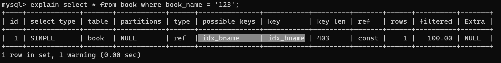

MySQL自学笔记进阶md版
基础篇补充
数据类型
数值类型
| 类型 | 大小 | 范围（有符号） | 范围（无符号） | 用途 |
|---|---|---|---|---|
| TINYINT | 1 字节 | (-128，127) | (0，255) | 小整数值 |
| SMALLINT | 2 字节 | (-32 768，32 767) | (0，65 535) | 大整数值 |
| MEDIUMINT | 3 字节 | (-8 388 608，8 388 607) | (0，16 777 215) | 大整数值 |
| INT或INTEGER | 4 字节 | (-2 147 483 648，2 147 483 647) | (0，4 294 967 295) | 大整数值 |
| BIGINT | 8 字节 | (-9 233 372 036 854 775 808， 9 223 372 036 854 775 807) |
(0，18 446 744 073 709 551 615) | 极大整数值 |
| FLOAT | 4 字节 | (-3.402 823 466 E+38， -1.175 494 351 E-38)， 0， (1.175 494 351 E-38， 3.402 823 466 351 E+38) |
0， (1.175 494 351 E-38， 3.402 823 466 E+38) |
单精度 浮点数值 |
| DOUBLE | 8 字节 | (-1.797 693 134 862 315 7 E+308， -2.225 073 858 507 201 4 E-308)， 0， (2.225 073 858 507 201 4 E-308， 1.797 693 134 862 315 7 E+308) |
0， (2.225 073 858 507 201 4 E-308， 1.797 693 134 862 315 7 E+308) |
双精度 浮点数值 |
| DECIMAL | 对DECIMAL(M,D) ， 如果M>D，为M+2否则为D+2 |
依赖于M和D的值 | 依赖于M和D的值 | 小数值 |
日期和时间类型
| 类型 | 大小 (字节) | 范围 | 格式 | 用途 |
|---|---|---|---|---|
| DATE | 3 | 1000-01-01/9999-12-31 | YYYY-MM-DD | 日期值 |
| TIME | 3 | ‘-838:59:59’/‘838:59:59’ | HH:MM:SS | 时间值或持续时间 |
| YEAR | 1 | 1901/2155 | YYYY | 年份值 |
| DATETIME | 8 | 1000-01-01 00:00:00/9999-12-31 23:59:59 | YYYY-MM-DD HH:MM:SS | 混合日期和时间值 |
| TIMESTAMP | 4 | 1970-01-01 00:00:00/2038 结束时间是第 2147483647 秒 ( INT类型最大值 )， 北京时间 2038-1-19 11:14:07， 格林尼治时间 2038-1-19 03:14:07 |
YYYYMMDD HHMMSS | 混合日期和时间值，时间戳 |
字符串类型
| 类型 | 大小 | 用途 |
|---|---|---|
| CHAR | 0-255字节 | 定长字符串 |
| VARCHAR | 0-65535 字节 | 变长字符串 |
| TINYBLOB | 0-255字节 | 不超过 255 个字符的二进制字符串 |
| TINYTEXT | 0-255字节 | 短文本字符串 |
| BLOB | 0-65 535字节 | 二进制形式的长文本数据 |
| TEXT | 0-65 535字节 | 长文本数据 |
| MEDIUMBLOB | 0-16 777 215字节 | 二进制形式的中等长度文本数据 |
| MEDIUMTEXT | 0-16 777 215字节 | 中等长度文本数据 |
| LONGBLOB | 0-4 294 967 295字节 | 二进制形式的极大文本数据 |
| LONGTEXT | 0-4 294 967 295字节 | 极大文本数据 |
VARCHAR 的大小可以达到 65535 ？
- 在定义表结构时
VARCHAR(M)中的 M 指的是字符长度并非字节长度，在utf8mb4中每个字符占 4 字节- 所以在定义 varchar 字段时，最高可以定义 65535 / 4 = 16383.75
- 但是由于
行格式和 行溢出 的限制实测最多可以存储 48545 字节 ≈ 12136 字符
存储过程、存储函数
存储过程 Stored Procedure
阿里开发规范 【强制】禁止使用存储过程，存储过程难以调试和扩展，更没有移植性。
- MySQL 从 5.0 开始支持存储过程和函数
- 将复杂的 SQL 逻辑封装在一起，应用程序无须关注内部逻辑，简单的调用存储过程和函数即可
原理：
- 就是将一组经过 预先编译 好的 SQL 语句封装在 MySQL 服务器上
- 需要执行的时候只需要发起调用命令，服务端即可执行这组 SQL 语句
好处：
- 简化操作，提高 SQL 语句重用性
- 减少网络传输量
- 避免失误、提高效率
- 减少了 SQL 在网络中暴露的风险，提高安全性
用法
|
|
参数（分类）：
- 没有参数【无参数无返回】
- IN【有参数无返回】
默认 - OUT【无参数有返回】
- IN OUT / INOUT【有参数有返回】
特征：
LANGUAGE SQL：说明存储过程执行体是由SQL语句组成的，当前系统支持的语言为SQL。[NOT] DETERMINISTIC：指明存储过程执行的结果是否确定。DETERMINISTIC表示结果是确定的。每次执行存储过程时，相同的输入会得到相同的输出。NOT DETERMINISTIC表示结果是不确定的，相同的输入可能得到不同的输出。如果没有指定任意一个值，默认为NOT DETERMINISTIC。{ CONTAINS SQL | NO SQL | READS SQL DATA | MODIFIES SQL DATA }：指明子程序使用SQL语句的限制。- CONTAINS SQL表示当前存储过程的子程序包含SQL语句，但是并不包含读写数据的SQL语句；
- NO SQL表示当前存储过程的子程序中不包含任何SQL语句；
- READS SQL DATA表示当前存储过程的子程序中包含读数据的SQL语句；
- MODIFIES SQL DATA表示当前存储过程的子程序中包含写数据的SQL语句。
- 默认情况下，系统会指定为CONTAINS SQL。
SQL SECURITY { DEFINER | INVOKER }：执行当前存储过程的权限，即指明哪些用户能够执行当前存储过程。DEFINER表示只有当前存储过程的创建者或者定义者才能执行当前存储过程；INVOKER表示拥有当前存储过程的访问权限的用户能够执行当前存储过程。- 如果没有设置相关的值，则MySQL默认指定值为DEFINER。
COMMENT 'string'：注释信息，可以用来描述存储过程。
创建存储过程例：
|
|
调用存储过程例：
|
|
|
|
存储函数 Stored Function
MySQL 自带的
count(); 计数、sum(); 求和、avg(); 平均值、max(); 最大值、min(); 最小值都是函数存储函数就是我们自定义的函数
- 存储函数是带有返回值的，存储过程可以不带返回值
用法
|
|
- 约束/特征 同 存储过程
创建存储函数例：
|
|
调用存储函数例：
|
|
存储函数和存储过程对比
| 关键字 | 调用语法 | 返回值 | 应用场景 | |
|---|---|---|---|---|
| 存储过程 | PROCEDURE | CALL 存储过程() | 理解为有 0 个或多个 | 一般用于更新 |
| 存储函数 | FUNCTION | SELECT 函数() | 只能是一个 | 一般用于查询结果为一个值并返回时 |
- 存储函数可以放在查询语句中使用，存储过程不行 。
- 存储过程的功能更加强大，包括能够执行对表的操作（比如创建表，删除表等）和事务操作，这些功能是存储函数不具备的。
查看、修改、删除
略
变量、流程控制、游标
- 这块是为便于和 存储过程 / 存储函数 配合使用的
- 需要时可以查看链接学习使用 wzblog
略
触发器
触发器和存储过程类似，都是存储在 MySQL 服务器中的一段程序
不过存储过程是手动触发的，触发器是在执行一些事件的时候自动触发的
- 当一个业务需要向
商品表库存表中添加数据时，通常我们会使用事务实现数据的完整性，但一旦遇到特殊情况忘记了其中一步，会导致数据缺失 - 这时就可以使用触发器，实现当
商品表有数据插入时库存表自动触发插入
优点：
- 可以确保数据完整性
- 可以记录操作日志
- 在操作数据前，进行数据合法性校验
缺点：
- 可读性差
- 表结构或数据变更，容易导致触发器出错
用法：
|
|
说明：
表名：表示触发器监控的对象。BEFORE|AFTER：表示触发的时间。BEFORE 表示在事件之前触发；AFTER 表示在事件之后触发。INSERT|UPDATE|DELETE：表示触发的事件。- INSERT 表示插入记录时触发；
- UPDATE 表示更新记录时触发；
- DELETE 表示删除记录时触发。
触发器执行的语句块：可以是单条SQL语句，也可以是由BEGIN…END结构组成的复合语句块。
创建触发器例1：
|
|
创建触发器例2：定义触发器“salary_check_trigger”，基于员工表“employees”的INSERT事件，在INSERT之前检查将要添加的新员工薪资是否大于他领导的薪资，如果大于领导薪资，则报sqlstate_value为’HY000’的错误，从而使得添加失败。
|
|
- NEW 关键字代表 INSERT 添加语句的新记录，同理 OLD 为 DELETE 中要删除的已有的记录
- SIGNAL 抛出错误，代码为 SQLSTATE 后字符错误信息为 MESSAGE_TEXT
查看触发器：
查看触发器是查看数据库中已经存在的触发器的定义、状态和语法信息等。
方式 1 ：查看当前数据库的所有触发器的定义
|
|
方式 2 ：查看当前数据库中某个触发器的定义
|
|
方式 3 ：从系统库information_schema的TRIGGERS表中查询“salary_check_trigger”触发器的信息。
|
|
删除触发器：
触发器也是数据库对象，删除触发器也用DROP语句，语法格式如下：
|
|
DELIMITER
在存储过程、存储函数、触发器例子中都用到了 delimiter
作用为 修改程序执行结束的标识，避免语句块中出现分号时程序就结束执行了
MySQL8 新特性
新增的内容
字符集支持：
- MySQL 5 中默认字符集为 latin1，通常需要手动设置为 utf8 即 utf8mb3 避免乱码问题
- MySQL 8 中默认字符集为 utf8md4
加密规则：
- MySQL 5 中默认密码加密方式为 mysql_native_password
- MySQL 8 中默认加密方式改为了 caching_sha2_password 授权插件、角色、密码历史记录和 FIPS 模式支持，这些特性提高了数据库的安全性和性能，使数据库管理员能够更灵活地进行账户管理工作
- 导致在使用一些旧版的图形界面工具连接时报异常，更新图形界面工具 或 修改密码加密方式即可解决
|
|
更简便的 NoSQL 支持：
- MySQL 5.6 开始就支持 NoSQL 在 MySQL 8 对这一功能进行了优化，不再使用依赖模块 (schema)， 更灵活
更好的索引：
- MySQL 8 中新增了
隐藏索引降序索引- 隐藏索引可以用来测试去掉索引对查询性能的影响
- 在查询中混合存在多列索引时，使用降序索引可以提高查询的性能
更完善的 JSON 支持：
- MySQL 5.7 开始支持原生 JSON 数据的存储，有一些聚合函数实现 字符串 和 JSON 数据的解析和转换等
- MySQL 8 对这一功能做了优化，增加了聚合函数
JSON_ARRAYAGG()和JSON_OBJECTAGG()，将参数聚合为 JSON 数组或对象，新增了行内操作符 -»，是列路径运算符 -> 的增强，对 JSON 排序做了提升，并优化了 JSON 的更新操作。
改进、优化 InnoDB 存储引擎：
InnoDB 是 MySQL 默认的 存储引擎，是事务型数据库的首选引擎，支持事务安全表（ACID），支持行锁定和外键。在 MySQL 8 版本中，InnoDB 在自增、索引、加密、死锁、共享锁等方面做了大量的改进和优化，并且支持原子数据定义语言（DDL），提高了数据安全性，对事务提供更好的支持。
数据字典：
-
在之前的MySQL版本中，字典数据都存储在元数据文件和非事务表中。
-
从MySQL 8开始新增了事务数据字典，在这个字典里存储着数据库对象信息，这些数据字典存储在内部事务表中
原子数据定义语句：
- MySQL 8开始支持原子数据定义语句（Automic DDL），即
原子DDL。目前，只有 InnoDB 存储引擎支持原子 DDL。 - 在使用支持原子数据定义的存储引擎中，即事务要么完全操作成功，要么失败后回滚，不再进行部分提交。
资源管理：
- MySQL 8 开始支持创建和管理资源组…
- 资源管理更高效、合理
优化器增强：
- MySQL 优化器开始支持隐藏索引和降序索引。
- 隐藏索引不会被优化器使用，验证索引的必要性时不需要删除索引，先将索引隐藏，如果优化器性能无影响就可以真正地删除索引。
- 降序索引允许优化器对多个列进行排序，并且允许排序顺序不一致。
共用表表达式：
窗口函数：
正则表达式支持：
- MySQL 在 8.0.4 以后的版本中采用支持 Unicode 的国际化组件库实现正则表达式操作，这种方式不仅能提供完全的 Unicode 支持，而且是多字节安全编码。
内部临时表 ：
- TempTable 存储引擎取代 MEMORY 存储引擎成为内部临时表的默认存储引擎
日志记录：
- 在 MySQL 8 中错误日志子系统由一系列 MySQL 组件构成。这些组件的构成由系统变量 log_error_services 来配置，能够实现日志事件的过滤和写入。
备份锁：
- 新的备份锁允许在线备份期间执行数据操作语句，同时阻止可能造成快照不一致的操作。
- 新备份锁由 LOCK INSTANCE FOR BACKUP 和 UNLOCK INSTANCE 语法提供支持，执行这些操作需要备份管理员特权。
增强的MySQL复制：
- MySQL 8 复制支持对
JSON文档进行部分更新的二进制日志记录，该记录使用紧凑的二进制格式，从而节省记录完整 JSON 文档的空间。 - 当使用基于语句的日志记录时，这种紧凑的日志记录会自动完成，并且可以通过将新的 binlog_row_value_options 系统变量值设置为 PARTIAL_JSON 来启用。
移除的内容
查询缓存：
- 查询缓存命中率太小，很鸡肋
- 包括：语句… 、系统变量… 、状态变量… 、线程状态…
加密相关：
- 删除的加密相关的内容有：ENCODE()、DECODE()、ENCRYPT()、DES_ENCRYPT() 和 DES_DECRYPT() 函数
- 配置项 des-key-file，系统变量 have_crypt，FLUSH 语句的 DES_KEY_FILE 选项，HAVE_CRYPT CMake 选项。 对于移除的ENCRYPT() 函数，考虑使用 SHA2() 替代，对于其他移除的函数，使用 AES_ENCRYPT() 和 AES_DECRYPT() 替代。
空间函数相关：
- 在 MySQL 5.7 版本中，多个空间函数已被标记为过时。这些过时函数在 MySQL 8 中都已被移除，只保留了对应的 ST_ 和 MBR 函数。
\N和NULL：
- 在 SQL 语句中，解析器不再将 \N 视为 NULL，所以在 SQL 语句中应使用 NULL 代替 \N。
- 这项变化不会影响使用 LOAD DATA INFILE 或者 SELECT…INTO OUTFILE操作文件的导入和导出。在这类操作中，NULL 仍等同于 \N。
mysql_install_db：
- 在 MySQL 分布中，已移除了 mysql_install_db 程序，数据字典初始化需要调用带着 –initialize 或者 –initialize-insecure 选项的mysqld 来代替实现。另外，–bootstrap 和 INSTALL_SCRIPTDIR CMake 也已被删除。
通用分区处理程序：
- 通用分区处理程序已从 MySQL 服务中被移除。为了实现给定表分区，表所使用的存储引擎需要自有的分区处理程序。
- 提供本地分区支持的 MySQL 存储引擎有两个，即 InnoDB 和 NDB，而在 MySQL 8 中只支持 InnoDB。
系统和状态变量信息：
- 在 INFORMATION_SCHEMA 数据库中，对系统和状态变量信息不再进行维护。
- GLOBAL_VARIABLES、SESSION_VARIABLES、GLOBAL_STATUS、SESSION_STATUS表都已被删除。
- 另外，系统变量 show_compatibility_56 也已被删除。被删除的状态变量有 Slave_heartbeat_period、Slave_last_heartbeat , Slave_received_heartbeats、Slave_retried_transactions、Slave_running 。
- 以上被删除的内容都可使用性能模式中对应的内容进行替代。
mysql_plugin工具：
- mysql_plugin 工具用来配置 MySQL 服务器插件，现已被删除，可使用 –plugin-load 或 –plugin-load-add 选项在服务器启动时加载插件或者在运行时使用 INSTALL PLUGIN 语句加载插件来替代该工具。
共用表表达式
概念：
- 公用表表达式（或通用表表达式）简称为 CTE（Common Table Expressions）
- CTE 是一个命了名的临时结果集，作用范围是当前语句
- 我理解 CTE 是一个可复用的子查询，但是 CTE 可以引用其它 CTE ，子查询不行
用法
|
|
普通公用表表达式
|
|
- 共用表表达式写法
- 我理解为讲一个查询中可能会重复用到的子查询表保存起来，在用的时候直接当作一个表来使用
|
|
|
|
递归公用表表达式
- CTE 可以调用自身 和自身连接，可以达到一个共同根节点的树形结构数据上非常高效
|
|
窗口函数
案例：
- 现有表：sales

- 计算这个网站在 每个城市的销售总额、在全国的销售总额、每个区的销售额占所在城市销售额中的比率，以及占总销售额中的比率。
|
|
- 使用窗口函数实现
|
|
由于没有用到临时表，执行的效率也更高了。
在这种需要用到分组统计的结果对每一条记录进行计算的场景下，使用窗口函数更好 。
概念：
- 窗口函数是介于单行和分组函数之间的：
- 分组函数是将数据分组并合并
- 窗口函数是将数据分组但不合并，将结果置于每一条数据记录中
- 窗口函数的分类：
- 静态窗口函数
- 静态窗口函数的窗口大小是固定的，不会因为记录的不同而不同
- 动态窗口函数
- 动态窗口函数的窗口大小会随着记录的不同而变化
- 静态窗口函数
- 窗口函数总体上可以分为序号函数、分布函数、前后函数、首尾函数和其他函数，如下表：

用法
PARTITION BY ：分片、分区
|
|
或者是：
|
|
-
序号函数：
row_number( )顺序排序
- 现有表 goods
- 需求：查询 goods 数据表中每个商品分类下价格降序排列的各个商品信息。
1 2 3 4# 根据 category_id 分组并按照 price 降序排序 select row_number() over(partition by category_id order by price desc) as row_num, id, category_id, category, NAME, price, stock from goods;
- 需求：查询 goods 数据表中每个商品分类下价格最高的 3 种商品信息。
1 2 3 4 5 6select * from ( select row_number() over(partition by category_id order by price desc) as row_num, id, category_id, category, NAME, price, stock from goods ) as t where row_num <= 3;
rank( )并列排序
- 对序号进行并列排序，并且会跳过重复的序号，比如序号为 1 、 1 、 3 【2 被覆盖了】
1 2 3select rank() over(partition by category_id order by price desc) as row_num, id, category_id, category, NAME, price, stock from goodsdense_rank( )并列排序
- 对序号进行并列排序，并且不会跳过重复的序号，比如序号为1 、1 、2【2 还在继续排序】
1 2 3select dense_rank() over(partition by category_id order by price desc) as row_num, id, category_id, category, NAME, price, stock from goods -
分布函数：
percent_rank( )等级值百分比
- 按照
(rank - 1 ) / (rows - 1 )计算等级值百分比，值为 0 - 1 - 相当于计算概率分布，我理解为百分比的排序、进度条
1 2 3 4 5 6# 计算 goods 数据表中的商品的PERCENT_RANK值。 SELECT RANK() OVER w AS r, PERCENT_RANK() OVER w AS pr, id, category_id, category, NAME, price, stock FROM goods WINDOW w AS (PARTITION BY category_id ORDER BY price DESC);
cume_dist()累计分布值
- 主要用于查询小于或等于某个值的比例。
1 2 3 4# 计算小于等于当前价格的比例 SELECT CUME_DIST() OVER(PARTITION BY category_id ORDER BY price ASC) AS cd, id, category, NAME, price FROM goods; -
前后函数：
lag(expr, n)返回当前行的前 n 行的 expr 的值
1 2 3# 查询 goods 表中当前商品的价格和前一个商品的价格 SELECT id, category, NAME, price,LAG(price, 1 ) OVER (PARTITION BY category_id ORDER BY price) AS pre_price FROM goods1 2 3 4 5 6 7# 查询 goods 数据表中前一个商品价格与当前商品价格的差值。 SELECT id, category, NAME, price, pre_price, price - pre_price AS diff_price FROM ( SELECT id, category, NAME, price,LAG(price, 1 ) OVER w AS pre_price FROM goods WINDOW w AS (PARTITION BY category_id ORDER BY price) ) t;
lead()返回当前行的后 n 行的 expr 的值
1 2 3# 查询 goods 表中当前商品的价格和后第二个商品的价格 SELECT id, category, NAME, price, LEAD(price, 2 ) OVER (PARTITION BY category_id ORDER BY price) AS pre_price FROM goods -
首尾函数：
first_value(expr)返回第一个 expr 的值
1 2 3# 查询 category_id 分组后的商品价格信息和每组第一个商品的价格 SELECT id, category, NAME, price, first_value(price) OVER (PARTITION BY category_id ORDER BY price) AS first_price FROM goodslast_value(expr)返回最后一个 expr 的值
1 2 3# 查询 category_id 分组后的商品价格信息和每组最后一个商品的价格 SELECT id, category, NAME, price, last_value(price) OVER (PARTITION BY category_id ORDER BY price range between unbounded preceding and unbounded following) AS last_price FROM goodsorder by 后面的
range between unbounded preceding and unbounded following为设置取值区间为分组的前后无界限
-
其它函数：
NTH_VALUE(expr,n)返回第 n 个 expr 的值
1 2 3 4 5 6# 查询 goods 数据表中排名第 2 和第 3 的价格信息 SELECT id, category, NAME, price,NTH_VALUE(price, 2 ) OVER w AS second_price, NTH_VALUE(price, 3 ) OVER w AS third_price FROM goods where category_id = 1 WINDOW w AS (PARTITION BY category_id ORDER BY price);
NTILE(n)将分区中的有序数据分为 n 个桶，记录桶编号
1 2 3# 将 goods 表中的商品按照价格分为 3 组 (尽可能平均的分) SELECT NTILE( 3 ) OVER w AS nt,id, category, NAME, price FROM goods WINDOW w AS (PARTITION BY category_id ORDER BY price);
高级篇
字符集
utf8mb3阉割过的 utf8 字符集，用 1 - 3 个字节表示字符，MySQL 中utf8默认指的就是utf8mb3utf8mb4正宗的 utf8 字符集，用 1 - 4 个字节表示字符，如需存储 emoji 表情，就需要用到utf8mb4
-
MySQL 8 之前版本默认字符集为 latin1，如果想存储中文字符，需
-
在 my.cnf 中设置数据库默认字符集
vim /etc/my.cnf添加character_set_server=utf8- 重启 MySQL 服务
systemctl restart mysqld
-
在创建数据库或表时指定字符集
-
数据库
1 2 3CREATE DATABASE 数据库名 [[DEFAULT] CHARACTER SET 字符集名称] [[DEFAULT] COLLATE 比较规则名称]; -
表
1 2 3 4 5 6CREATE TABLE 表名 ( 列名 字符串类型 [CHARACTER SET 字符集名称] [COLLATE 比较规则名称], 列的信息... ) [[DEFAULT] CHARACTER SET 字符集名称] [COLLATE 比较规则名称]]
-
-
修改已创建数据库的字符集
alter database dbtest1 character set 'utf8';
-
修改已创建数据表的字符集
alter table t_emp convert to character set 'utf8';
字符串比较规则：
- 其中 Default collation 字段为默认比较规则
后缀 英文释义 描述 _ai accent insensitive 不区分重音 _as accent sensitive 区分重音 _ci case insensitive 不区分大小写 _cs case sensitive 区分大小写 _bin binary 以二进制方式比较 - 查看、修改字符串比较规则
1 2 3 4 5 6 7 8#查看服务器的字符集和比较规则 SHOW VARIABLES LIKE '%_server'; #查看数据库的字符集和比较规则 SHOW VARIABLES LIKE '%_database'; #查看具体数据库的字符集 SHOW CREATE DATABASE dbtest1; #修改具体数据库的字符集 ALTER DATABASE dbtest1 DEFAULT CHARACTER SET 'utf8' COLLATE 'utf8_general_ci';1 2 3 4 5 6#查看表的字符集 show create table employees; #查看表的比较规则 show table status from atguigudb like 'employees'; #修改表的字符集和比较规则 ALTER TABLE emp1 DEFAULT CHARACTER SET 'utf8' COLLATE 'utf8_general_ci';- 在数据库设置中就需要保证 character_set_client 和 character_set_connection 和 character_set_results 设置一致，以避免数据库服务器处理中出现乱码问题
- 使用
SET NAMES utf8;或 设置my.cnf 中内容 或 单独设置这三个值 效果一致

-
SQL 大小写规范
- 在 windows 系统中
SHOW VARIABLES LIKE '%lower_case_table_names%'的 value 值为0即: 大小写不敏感 - 在 linux 系统中
SHOW VARIABLES LIKE '%lower_case_table_names%'的 value 值为1，部分情况下大小写敏感
这个值也可以设置为
2即: 无论大小写字符，凡是查找就都是按照小写进行
在 MySQL 5 设置 my.cnf 中加入
lower_case_table_names=1【需要提前将表明全部改为小写，重启生效】在 MySQL 8 设置【不建议改】
1 2 3 41、停止MySQL服务 2、删除数据目录，即删除 /var/lib/mysql 目录 3、在MySQL配置文件 (/etc/my.cnf) 中添加 lower_case_table_names=1 4、启动MySQL服务
- MySQL 在 Linux 下数据库名、表名、列名、别名大小写规则是这样的：
- 数据库名、表名、表的别名、变量名是严格区分大小写的：
dbtest99; - 关键字、函数名称在 SQL 中不区分大小写：
COUNT()sum() - 列名（或字段名）与列的别名（或字段别名）在所有的情况下均是忽略大小写的：
Id, NaME, PassWORD
- 数据库名、表名、表的别名、变量名是严格区分大小写的：
建议：
- 关键字和函数名称全部大写
- 数据库名、表名、表别名、字段名、字段别名等全部小写
- SQL 语句必须以分号结尾
sql_mode
- sql_mode 是一组语法校验规则，会影响 MySQL 的数据验证检查
- 通过设置 sql_mode 实现不同严格程度的数据校验，有效保证数据准确性
- 【宽松模式】MySQL 5.6 默认为宽松模式
NO_ENGINE_SUBSTITUTION，是一个空值，允许一些非法数据的插入- 宽松模式在插入数据时，即使给了一个错误的数据，仍然可能被接受不报错。
- 举例：在给一个
char(10)的字段插入1234567890abc这样一个长度超过 10 的数据时，MySQL 会自行处理并接受，并不会报错，是将前十位数据插入后面的舍弃。 - 应用场景：在做数据迁移时可以打开宽松模式，生产环境中即便使用的是 MySQL 5.6 也应设置为严格模式
- 【严格模式】MySQL 5.7 默认为严格模式
STRICT_TRANS_TABLES，对数据进行严格的校验，错误时报 ERROR 并回滚- 严格模式则严格按照数据的约束进行校验，当遇到的是错误的数据时立即报 ERROR
- 问题：使用严格模式时若设置模式中包含了
NO_ZERO_DATE不允许插入零日期。当一个字段使用的是 TIMESTAMP 时间戳类型时，未声明为 NULL 或 default 值时，将自动分配 DEFAULT ‘0000-00-00 00:00:00’ ( 零时间戳 )，此时会报错误 ERROR
| sql_mode 值 | 描述 |
|---|---|
| ONLY_FULL_GROUP_BY | 对于 GROUP BY 聚合操作，如果在SELECT中的列，没有在 GROUP BY 中出现，那么这个 SQL 是不合法的，因为列不在 GROUP BY 从句中 |
| NO_AUTO_VALUE_ON_ZERO | 该值影响自增长列的插入。默认设置下，插入 0 或 NULL 代表生成下一个自增长值。如果用户 希望插入的值为 0，而该列又是自增长的，那么这个选项就有用了 |
| ==STRICT_TRANS_TABLES== | 在该模式下，如果一个值不能插入到一个事务表中，则中断当前的操作，对非事务表不做限制 |
| NO_ZERO_IN_DATE | 在严格模式下，不允许日期和月份为零 |
| NO_ZERO_DATE | MySQL 数据库不允许插入零日期，插入零日期会抛出错误而不是警告 |
| ERROR_FOR_DIVISION_BY_ZERO | 在 INSERT 或 UPDATE 过程中,如果数据被零除，则产生错误而非警告。如果未给出该模式，那么数据被零除时 MySQL 返回 NULL |
| NO_AUTO_CREATE_USER | 禁止 GRANT 创建密码为空的用户 |
| ==NO_ENGINE_SUBSTITUTION== | 如果需要的存储引擎被禁用或未编译，那么抛出错误。不设置此值时，用默认的存储引擎替代，并抛出一个异常 |
| PIPES_AS_CONCAT | 将 “||” 视为字符串的连接操作符而非或运算符，这和 Oracle 数据库是一样，也和字符串的拼接函数 Concat 相类似 |
| ANSI_QUOTES | 启用 ANSI_QUOTES 后，不能用双引号来引用字符串，因为它被解释为识别符 |
查看当前的 sql_mode
|
|
临时设置 sql_mode
|
|
永久设置 sql_mode
- 在 my.cnf 中添加
|
|
- 重启 MySQL 服务【生产场景推荐使用临时 + 永久设置配合】
MySQL 的数据目录
主要目录结构
Windows 中的 MySQL 数据存放目录 C:\ProgramData\MySQL\MySQL Server 8.0
|
|
Linux 中的 MySQL 数据存放目录 /var/lib/mysql
- 相关命令目录
/usr/bin(mysqladmin、mysqlbinlog、mysqldump 等命令)和/usr/sbin - 配置文件目录
/usr/share/mysql-8.0 (命令及配置文件)/etc/mysql (如 my.cnf)
查看 MySQL 相关的目录
find / -name mysql
数据库文件系统
【存储引擎】：InnoDB / MyISAM 的作用就是
把表存储在文件系统上。
- 在写入数据的时候，存储引擎将数据写入到文件系统
- 在读取数据的时候，存储引擎从文件系统中读取数据并返回
==MySQL 自带的数据库==
- mysql：MySQL 的核心数据库，用于存储用户账户、权限信息，存储过程、事件的定义信息，日志，帮助信息、时区信息等
- information_schema：存储所有其他数据库的
描述性信息/元数据，比如表、视图、存储过程/函数、触发器、列、索引等 - performance_schema：存储 MySQL 数据库在运行时期的状态信息，性能指标。统计执行的语句、花费的时间、内存使用等
- sys：通过
视图将 information_schema、performance_schema 结合起来。帮助开发人员监控 MySQL 的技术性能
MySQL 5.7 文件结构
- 进入 Linux 版本 MySQL 的数据存放目录
/var/lib/mysql，可以看到 MySQL 自带的数据库目录，以及我创建的数据库目录：dbtest1、dbtest2

- 进入 dbtest1 目录
- db.opt：存储当前数据库下的信息 ( 字符集、比较规则等 )
- emp1.frm：存储表结构信息 ( 字段名、字段类型、约束等 )
- emp1.idb：存储表数据【默认】( MySQL 5.5 前表数据存放在上级目录
ibdata1中 )
ibdata1：【系统表空间】system tablespace
- MySQL 5.5 前，表数据默认都存储在此文件中
- 是一个
自扩展文件默认大小 12M- 可以修改 my.cnf 配置系统表空间默认路径及大小
1 2[server] innodb_data_file_path=data1:512M;data2:512M:autoextend表名.ibd：【独立表空间】file-per-table tablespace
- 在 MySQL 5.6.6 以及之后的版本中，默认为每一个表建立一个独立的表空间
设置使用系统表空间还是独立表空间：
- 可以修改 my.cnf 配置
1 2[server] innodb_file_per_table=0 # 0：代表使用系统表空间； 1：代表使用独立表空间
MySQL 8 文件结构
- 进入 Linux 版本 MySQL 的数据存放目录
/var/lib/mysql，可以看到 MySQL 自带的数据库目录，以及我创建的数据库目录：dbtest1

- 进入 dbtest1 目录
- emp1.ibd：集成了 表结构信息 和 表数据 的文件
解析 ibd 文件：
- 使用 Oracle 提供集成的 ibd2sdi 工具
1ibd2sdi --dump-file=tbl_dic_type.txt tbl_dic_type.ibd
- 生成 tbl_dic_type.txt 文件，可以看到里面有对表结构信息的描述

MyISAM 存储引擎的文件结构
- MyISAM 存储引擎的表由三个文件构成
- 表名.frm：等同于 InnoDB 中的 frm 文件，用于存储表结构信息 ( 字段名、字段类型、约束等 )【MySQL 8 中为
表名_xxx.sdi】 - 表名.MYD：MYData 存储表数据 ( MyISAM 存储引擎中的表数据和索引信息是分开存储的 )
- 表名.MYI：MYIndex 存储索引 ( MyISAM 存储引擎中的索引都是二级索引 )
- 表名.frm：等同于 InnoDB 中的 frm 文件，用于存储表结构信息 ( 字段名、字段类型、约束等 )【MySQL 8 中为
用户与权限管理
用户管理
登录 MySQL 服务器命令：
|
|
-h指定主机名或主机 IP，省略时为 localhost-P指定连接的端口，省略时为 3306-u用户名-p密码数据库名指定登录的数据库，省略时需要登录后 use 数据库-e指定登录后执行的 SQL 语句，执行结束自动退出

创建用户：
|
|
-
创建用户基础写法
create user zhangsan identified by '123456'- 此时默认 host 为 ‘%’
-
创建用户写法举例
create user 'kangshifu'@'localhost' identified by '123456';- 指定用户 kangshifu 可使用的 host 为 localhost，在 mysql 数据库的 user 表中，由 host 和 user 共同组成复合主键

修改用户：
|
|
- 修改用户名是对 user 表进行修改，开发中很少这么做
- 修改数据
update user set user = 'lisi' where user = 'zhangsan'; - 刷新权限
flush privileges;
- 修改数据
删除用户：
- 使用 DROP 方式删除【推荐】
|
|

- 使用 DELETE 方式删除
- 使用 delete 方式删除会有残留信息保留
修改自身密码：
- 在 MySQL 8 中移除了 PASSWORD( ) 函数，因此无法使用 update 语句对密码进行修改
|
|
- 使用 alter user 命令修改自身密码
|
|
- 使用 set 命令修改自身密码
|
|
修改其它用户密码：
- 使用 update 修改其它用户密码【不推荐】
|
|
- 使用 ALTER 语句来修改普通用户的密码 可以使用 ALTER USER 语句来修改普通用户的密码
|
|
- 使用 SET 命令来修改普通用户的密码 使用 root 用户登录到 MySQL 服务器后，可以使用 SET 语句来修改普通用户的密码
|
|
密码过期策略、密码重用策略：
-
设置全局密码过期策略
- 方式①：使用SQL语句更改该变量的值并持久化
1SET PERSIST default_password_lifetime = 180; # 建立全局策略，设置密码每隔180天过期- 方式②：配置文件my.cnf中进行维护
1 2[mysqld] default_password_lifetime=180 #建立全局策略，设置密码每隔180天过期 -
单独设置密码过去策略
- 通过 PASSWORD EXPIRE 实现单独设置密码过期策略
1 2 3 4 5 6 7 8 9 10 11#设置kangshifu账号密码每90天过期： CREATE USER 'kangshifu'@'localhost' PASSWORD EXPIRE INTERVAL 90 DAY; ALTER USER 'kangshifu'@'localhost' PASSWORD EXPIRE INTERVAL 90 DAY; #设置密码永不过期： CREATE USER 'kangshifu'@'localhost' PASSWORD EXPIRE NEVER; ALTER USER 'kangshifu'@'localhost' PASSWORD EXPIRE NEVER; #延用全局密码过期策略： CREATE USER 'kangshifu'@'localhost' PASSWORD EXPIRE DEFAULT; ALTER USER 'kangshifu'@'localhost' PASSWORD EXPIRE DEFAULT; -
设置全局密码重用策略
- 方式①：使用SQL
1 2SET PERSIST password_history = 6; #设置不能选择最近使用过的6个密码 SET PERSIST password_reuse_interval = 365; #设置不能选择最近一年内的密码- 方式②：my.cnf配置文件
1 2 3[mysqld] password_history=6 password_reuse_interval=365 -
单独设置密码重用策略
1 2 3 4 5 6 7 8 9 10 11 12 13 14 15 16#不能使用最近5个密码： CREATE USER 'kangshifu'@'localhost' PASSWORD HISTORY 5; ALTER USER 'kangshifu'@'localhost' PASSWORD HISTORY 5; #不能使用最近365天内的密码： CREATE USER 'kangshifu'@'localhost' PASSWORD REUSE INTERVAL 365 DAY; ALTER USER 'kangshifu'@'localhost' PASSWORD REUSE INTERVAL 365 DAY; #既不能使用最近5个密码，也不能使用365天内的密码 CREATE USER 'kangshifu'@'localhost' PASSWORD HISTORY 5 PASSWORD REUSE INTERVAL 365 DAY; ALTER USER 'kangshifu'@'localhost' PASSWORD HISTORY 5 PASSWORD REUSE INTERVAL 365 DAY;
权限管理
|
|
- 权限分类及常用的权限
-
CREATE和DROP权限，允许创建新的数据库和表，或删除（移掉）已有的数据库和表 -
SELECT、INSERT、UPDATE和DELETE权限，允许在一个数据库现有的表上实施操作 -
SELECT权限，只有在它们真正从一个表中检索行时才被用到 -
INDEX权限，允许创建或删除索引，适用于已有的表。如果具有某个表的 CREATE 权限，就可以在 CREATE TABLE 语句中包括索引定义 -
ALTER权限，允许使用 ALTER TABLE 来更改表的结构和重新命名表 -
CREATE ROUTINE权限，允许创建保存的程序（函数和程序），更改和删除保存的程序，EXECUTE权限允许执行保存的程序 -
GRANT权限，允许授权给其他用户，可用于数据库、表和保存的程序 -
FILE权限，允许使用 LOAD DATA INFILE 和 SELECT … INTO OUTFILE 语句读或写服务器上的文件，任何被授予 FILE 权限的用户都能读或写 MySQL 服务器上的任何文件（说明用户可以读任何数据库目录下的文件，因为服务器可以访问这些文件）
权限的查看、赋予和撤销
授予权限：
- 可以
赋予角色权限后将角色赋予给用户，也可以直接赋予用户权限 - 直接赋予权限命令：
|
|
-
举例：授予 zhangsan 查询 dbtest99 数据库中 emp 表的权限
grant select on dbtest99.emp to 'zhangsan'@'%';- 当 zhangsan 要 update 数据时，会提示权限不足
- 再次赋予权限 时，相当于添加权限【并集】

- 赋予所有权限
grant all privileges on *.* to zhangsan;
授予权限的 横向分组 与 纵向分组
- 所谓横向的分组，就是指用户可以接触到的数据的范围，比如可以看到哪些表的数据；
- 所谓纵向的分组，就是指用户对接触到的数据能访问到什么程度，比如能看、能改，甚至是 删除。
查看权限：
- 查看当前用户权限
|
|
- 查看某用户的全局权限
|
|
收回权限：
- 回收权限命令
|
|
- 举例：回收 zhangsan 用户的所有权限
REVOKE ALL PRIVILEGES ON *.* FROM zhangsan@'%';

- 【注意】在将用户账户从user表删除之前，应该收回相应用户的所有权限
开发中尽可能不要使用 root 超级用户来访问数据库，因为 root 的密码放在代码中不安全，一旦泄漏，数据库将完全失去保护
权限表
- MySQL 通过权限表来控制用户对数据库的访问，在
mysql数据库中由 user、db 表和 table_priv、column_priv、proc_priv 表来记录权限信息 - user 表字段解释

- db 表字段解释
- 通过 host、db、user 组成复合主键，体现用户对某一数据库的相关操作权限
Create_routine_priv和Alter_routine_priv字段决定用户是否具有创建和修改存储过程的权限
-
tables_priv 表和 columns_priv 表
- tables_priv 表用来
对表设置操作权限 - columns_priv 表用来对表的
某一列设置权限
- tables_priv 表用来
-
procs_priv表
- procs_priv 表可以对
存储过程和存储函数设置操作权限
- procs_priv 表可以对
连接核实阶段：
- 通过 user 表中的 host、user 和 authentication_string 这 3 个字段匹配客户端提供信息
请求核实阶段：
- 根据用户的操作，按照 user - db - tables_priv - columns_priv 检查确认权限

角色
- 角色，就相当于权限的集合
创建角色：
- 创建角色命令
|
|
给角色赋予权限：
- 给角色赋予权限命令
|
|
查看角色的权限：
- 查看指定角色权限命令
|
|

回收角色的权限：
- 回收角色的权限命令
|
|

删除角色：
- 删除角色命令
|
|

为用户赋予角色：
- 为用户赋予角色命令
|
|
激活角色：
- 为用户赋予角色后需要激活角色，用户重新登录才真正拥有角色
- 激活角色命令【方式一】
|
|

- 激活角色命令【方式二】
|
|

查看当前用户的角色
1SELECT CURRENT_ROLE();
撤销用户的角色：
- 赊销用户角色命令
|
|

设置强制角色：
- 强制角色相当于为所有用户设置默认角色
- 服务启动前设置 my.cnf【方式一】
|
|
- 运行时设置【方式二】
|
|
配置文件与系统变量
配置文件
- 配置文件的启动选项被分为很多个组，每个组都是由 括起来的组名开头
- MySQL 8 默认的 my.cnf 配置文件
- 类似的组名可以有很多
[server]组名下边的启动选项将作用于所有的服务器程序[client]组名下边的启动选项将作用于所有的客户端程序

- 在指定对应的指令时会启用对应的标签组
- 例如：在服务器中设置的启动选项就需要写在
[mysqld]或[server]标签组下
- 例如：在服务器中设置的启动选项就需要写在

-
可以指定标签组执行的 MySQL 版本
- 例如：
[mysqld-5.7]的标签组中的内容就只能在 MySQL 5.7 的服务器版本中被执行
- 例如：
-
当配置出现矛盾时，以下方的配置为准
1 2 3 4 5 6[server] default-storage-engine = InnoDB [mysqld] # 当配置出现矛盾时，以下行为准 default-storage-engine = MyISAM -
当启动命令与 my.cnf 中内容出现矛盾时，以启动命令后方的配置为准
1 2[server] default-storage-engine = InnoDB1 2# 启动命令比配置文件的优先级高 mysql.server start --default-storage-engine=MyISAM
系统变量
- 在 my.cnf 中的配置和在启动命令中写的都是系统变量
- 设置系统变量
|
|
- 查看系统变量
|
|
这里的内容仅需了解 在 my.cnf 中的配置 和 在启动命令后方写的 都是系统变量 即可
如果需要使用可以查看：wzblog
逻辑架构
- MySQL 是典型的
Client/Server架构，客户端进程向服务端进程发送一段文本 ( SQL 语句 ) ，服务端进程处理后再向客户端进程返回一段文本 ( 处理结果 )
- 逻辑架构展开说明

连接层
-
客户端在访问 MySQL 服务器前，会先经过三次握手建立
TCP连接，后 MySQL 服务器对 TCP 传输过来的账号密码进行验证，身份验证、权限获取- 验证用户名密码，错误提示 Access denied for user 结束客户端程序
- 查询出账号拥有的权限并与连接关联，之后的权限判断都依照此时读到的权限
-
在连接池中创建一个 TCP 的长连接，后会在线程池中创建线程处理具体操作
服务层
- 服务器在该层会解析查询并创建对应的解析树，完成相应的优化
SQL Interface：SQL 接口
- 接受用户的 SQL 命令，并返回用户需要查询的结果
- 例如：SELECT … FROM 就是调用的 SQL Interface
Parser：解析器
- 对 SQL 语句进行语法分析、语义分析，并生成
语法树 - 如果 SQL 语句的关键字拼写错误或语义不合理，在此时就会报错
Optimizer：查询优化器
- 确定 SQL 语句的执行路径，生成
执行计划 - 指定使用的索引，选取
选取-投影-连接策略进行查询选取根据 where 语句进行选取，而不是将表全部查询出来再过滤投影根据 select 后的字段进行属性投影，而不是将全部字段都查询出来再过滤连接将这两个查询条件连接起来生成最终的查询结果
Caches & Buffers：查询缓存组件
- 内部维持着一些 Cache 和 Buffer，比如 Query Cache 用来缓存一条 SELECT 语句的执行结果
- 这个缓存机制是由一系列小缓存组成的。比如表缓存，记录缓存，key 缓存，权限缓存等
- 查询缓存可以在不同客户端之间共享，由于命中率较低在 MySQL 8 中被删除
引擎层
-
是插件式的存储引擎，负责 MySQL 中数据存储和提取，对物理服务器级别的底层数据执行操作
-
查看 MySQL 默认支持的引擎命令
show engines;

存储层
- 实打实的在文件系统上存储文件
MySQL 的三层架构
- 连接层：客户端和服务器端建立连接，客户端发送 SQL 至服务器端
- SQL 层（服务层）：对 SQL 语句进行查询处理；与数据库文件的存储方式无关
- 存储引擎层：与数据库文件打交道，负责数据的存储和读取
SQL 的执行流程
1.查询缓存
- 查询 SQL 与查询结果可能是以键值对的形式存储在内存中的。如果 SQL 语句命中了 key 那么直接返回 value，如果没有命中则继续执行并将执行结果存储在查询缓存中
- 由于两个查询请求在任何字符上的不同（例如：空格、注释、 大小写），都会导致缓存不会命中。因此 MySQL 的 查询缓存命中率不高
- 在使用到一些特殊的函数如
now()时，查询缓存就不应该开启。在执行 INSERT、UPDATE、 DELETE、TRUNCATE TABLE、 ALTER TABLE、DROPTABLE 或 DROP DATABASE 语句时缓存失效。对于更新压力大的数据库来说，查询缓存的命中率较低 - 一般推荐在静态表中开启查询缓存，即常常查询但不常更新的表。在 MySQL 5.7 中开启查询缓存配置 my.cnf 文件：
|
|
|
|
2.解析器
- 对 SQL 进行语法分析、语义分析
- 首先对 SQL 进行 **
词法分析**识别关键词和一些字符串所对应的是什么 - 然后对 SQL 进行
语法分析根据语法规则判断语句是否满足 MySQL 语法 - 如果词法分析和语法分析均通过，会生成一个语法树
|
|

3.优化器
-
确定 SQL 的执行计划并交出执行计划，比如是根据全表检索还是根据索引检索等
-
在查询优化中主要分为
逻辑优化阶段和物理优化阶段。在索引章节有补充 -
例如在查询语句中 where 后方有两个条件，那么先后执行哪个条件的顺序是优化器所做的事
4.执行器
- 先判断是否具有执行的权限，再调用存储引擎 API 进行执行
例如在执行
select SQL_CACHE * from test where ID = 1;语句：
调用 InnoDB 引擎接口取这个表的第一行，判断 ID 值是不是 1，如果不是则跳过，如果是则将这行存在结果集中
调用引擎接口取 “下一行”，重复相同的判断逻辑，直到取到这个表的最后一行。
执行器将上述遍历过程中所有满足条件的行组成的记录集作为结果集返回给客户端。
MySQL 执行顺序：
MySQL 8 执行流程
- ==开启 Profiling==：让 MySQL 收集 SQL 在执行过程中所使用的资源情况
|
|
|
|

- 查看当前会话最近几次的查询 Profiles
|
|

- 查看指定的查询语句的执行计划
|
|

MySQL 5.7 执行流程
- 开启查询缓存 query_cache 在 /etc/my.cnf 中新增一行
|
|
- 重启 MySQL 服务
|
|
-
开启执行计划，查看执行计划：同 MySQL 8
-
查看 Profiles

- 查看 Profile

可以查看指定 type 的执行计划

例如：查看 cpu 和 io 有关的执行情况

Oracle 中的执行流程

- 语法检查：检查 SQL 拼写，错误报语法错误
- 语义检查：检查访问的对象是否存在
- 权限检查：检查用户是否具有相应的权限
- 共享池检查：缓存 SQL 语句和该语句的执行计划
- 对 SQL 语句进行 hash 运算，如果在
库缓存(Library Cache)中找到则直接进入执行器【软解析】 - 如果没有 hash 到，则创建解析树进行解析，进入优化器生成执行计划执行【硬解析】
- 对 SQL 语句进行 hash 运算，如果在
Oracle 数据库架构图简图
数据库缓冲池
- InnoDB 将
数据页作为单位存储数据，每个数据页占 16KB - DBMS 会占用内存作为缓冲池，需要把在磁盘上的页缓存到内存中的 Buffer Pool 之后才可以访问，从而减少与磁盘直接进行 I/O 的时间
缓冲原则
- 根据 “
位置 * 频次” 这个原则，优先对使用频次高的热数据进行加载 - 在缓存空间允许的前提下，会提将把查询结果或将查询结果周围的数据放到缓冲池中【预读特性】
缓冲池在 MySQL 中的结构和作用：

- 在数据更新后不会立即更新磁盘数据，会按照一定的时间策略对本地磁盘进行更新
- 当 Buffer Pool 未对磁盘更新数据时宕机怎么办？
- 答：Redo Log & Undo Log（在事务章节会补充）
查看缓冲池的大小：
|
|
设置缓冲池大小：
- 通过变量设置缓冲池大小为 256MB : 256 * 1024 * 1024 =
268435456
|
|
- 通过配置 my.cnf 设置缓冲池大小
|
|
Buffer Pool 实例个数
- 将缓冲池
拆分成若干个小 Buffer Pool ，若 Buffer Pool 大小设置为 1GB 实例个数设置为 2，则每个实例占 512 MB - 当多个线程同时连接数据库时，让其分别访问各自的 Buffer Pool 避免为 Buffer Pool 加锁影响性能
- 通过配置 my.cnf 设置 Buffer Pool 实例个数
|
|
- Buffer Pool 实例个数并不是越多越好，管理各个 Buffer Pool 也是需要性能开销的，在缓冲池内存大小 > 1GB 时才有效
存储引擎
- 存储引擎实际上就是指表的类型，之前叫表处理器
- 用于接受上层传下来的指令，对表中的数据进行读取和写入的操作
存储引擎的查看与修改
查看支持的存储引擎：
|
|
查看系统默认的存储引擎：
|
|
修改默认的存储引擎：
- 通过设置变量设置默认存储引擎
|
|
- 通过修改 my.cnf 设置默认存储引擎
|
|

在创建表时指明存储引擎：
|
|
修改表的存储引擎：
|
|
存储引擎介绍
InnoDB 引擎
- 具备
外键支持功能的事务存储引擎，是为处理巨大数据量的最大性能设计 - 从 3.23.34a 版本开始包含 InnoDB 引擎，5.5 即之后的版本默认采用 InnoDB
- 优点：
- 支持外键
- 支持事务：事务的提交与回滚。若服务器崩溃，可以自动的恢复已提交的事务，撤销未提交的事务不需要额外的操作
- 频繁的增加或查询操作推荐 MyISAM，频繁的更新或删除操作推荐 InnoDB
- 相比 MyISAM 只支持表级锁，InnoDB 还支持行级锁
- 缺点：
- 相比 MyISAM，InnoDB 写的处理效率差一点
- MyISAM 只缓存索引，InnoDB 还会缓存数据，所以对内存要求比较高
MyISAM 引擎
- 提供了大量的特性，包括全文索引、压缩、空间函数(GIS)等
- 是 MySQL 5.5 之前的默认存储引擎
- 优点：
- 针对于增加和查询操作，MyISAM 的速度更快
- 有常量存储数据统计信息，
count(*)的效率高
- 缺点：
- 不支持事务、外键、行级锁
- 适合数据量小的场景使用，崩溃后无法安全恢复
Archive 引擎
- archive (归档) 主要设计用于数据存档，仅支持插入和查询两种功能
- 在 MySQL 5.5 版本后支持索引
- 支持 zlib 压缩库，相同数据量文件体积比 MyISAM 小 75%
- 数据文件后缀名为 .ARZ ，支持行级锁
Blackhole 引擎
- 丢弃写操作，读操作会返回空内容
- 会记录日志，不推荐使用
CSV 引擎
- 存储数据时，以逗号分隔各个数据项。不支持 null 数据
- 数据文件后缀名为 .CSM .CSV 可以使用 Excel 打开编辑
Memory 引擎
- 置于内存的表，表数据存在内存中，表结构存在 .frm 文件中
- 要求数据是长度不变的格式，BLOB、TEXT类型的数据不可用
- 查询速度比 MyISAM 快一个数量级，需要设置限制表的大小
- 同时支持 hash 索引【默认】和 B+ 树索引
- 通常在数据量小访问频繁时使用，存储临时数据即时使用时使用
Federated 引擎
- 是一个访问其它 MySQL 数据库的代理，提供跨服务器的灵活性
- 问题较多，默认被禁用
Merge引擎
- 管理多个 MyISAM 表构成的表集合
NDB引擎
- MySQL 集群专用存储引擎
- 也叫做 NDB Cluster 存储引擎，主要用于 MySQL Cluster 分布式集群环境
常见存储引擎对比
| 特点 | MyISAM | InnoDB | MEMORY | MERGE | NDB |
|---|---|---|---|---|---|
| 存储限制 | 有 | 64TB | 有 | 没有 | 有 |
| 事务安全 | 支持 | ||||
| 锁机制 | 表锁，即使操作一条记录也会锁住整个表，不适合高并发的操作 | 表锁，行锁：操作时只锁某一行，不对其它行有影响，适合高并发的操作 | 表锁 | 表锁 | 行锁 |
| B树索引 | 支持 | 支持 | 支持 | 支持 | 支持 |
| 哈希索引 | 支持 | 支持 | |||
| 全文索引 | 支持 | ||||
| 集群索引 | 支持 | ||||
| 数据缓存 | 支持 | 支持 | 支持 | ||
| 索引缓存 | 只缓存索引，不缓存真实数据 | 不仅缓存索引还要缓存真实数据，对内存要求较高，而且内存大小对性能有决定性的影响 | 支持 | 支持 | 支持 |
| 数据可压缩 | 支持 | ||||
| 空间使用 | 低 | 高 | N/A | 低 | 低 |
| 内存使用 | 低 | 高 | 中等 | 低 | 高 |
| 批量 插入 的速度 | 高 | 低 | 高 | 高 | 高 |
| 支持外键 | 支持 |
MyISAM 与 InnoDB对比
| 对比项 | MyISAM | InnoDB |
|---|---|---|
| 外键 | 不支持 | 支持 |
| 事务 | 不支持 | 支持 |
| 行表锁 | 表锁，即使操作一条记录也会锁住整个表，不适合高并发的操作 | 行锁，操作时只锁某一行，不对其它行有影响，适合高并发的操作 |
| 缓存 | 只缓存索引，不缓存真实数据 | 不仅缓存索引还要缓存真实数据，对内存要求较高，而且内存大小对性能有决定性的影响 |
| 自带系统表使用 | Y | N |
| 关注点 | 性能：节省资源、消耗少、简单业务 | 事务：并发写、事务、更大资源 |
| 默认安装 | Y | Y |
| 默认使用 | N | Y |
课外补充
1、InnoDB 表的优势
InnoDB 存储引擎在实际应用中拥有诸多优势，比如操作便利、提高了数据库的性能、维护成本低等。如果由于硬件或软件的原因导致服务器崩溃，那么在重启服务器之后不需要进行额外的操作。InnoDB 崩溃恢复功能自动将之前提交的内容定型，然后撤销没有提交的进程，重启之后继续从崩溃点开始执行。
InnoDB 存储引擎在主内存中维护缓冲池，高频率使用的数据将在内存中直接被处理。这种缓存方式应用于多种信息，加速了处理进程。
在专用服务器上，物理内存中高达80%的部分被应用于缓冲池。如果需要将数据插入不同的表中，可以设置外键加强数据的完整性。更新或者删除数据，关联数据将会被自动更新或删除。如果试图将数据插入从表，但在主表中没有对应的数据，插入的数据将被自动移除。如果磁盘或内存中的数据出现崩溃，在使用脏数据之前，校验和机制会发出警告。当每个表的主键都设置合理时，与这些列有关的操作会被自动优化。插入、更新和删除操作通过做改变缓冲自动机制进行优化。 InnoDB 不仅支持当前读写，也会缓冲改变的数据到数据流磁盘 。
InnoDB 的性能优势不只存在于长时运行查询的大型表。在同一列多次被查询时，自适应哈希索引会提高查询的速度。使用 InnoDB 可以压缩表和相关的索引，可以 在不影响性能和可用性的情况下创建或删除索引 。对于大型文本和 BLOB 数据，使用动态行形式，这种存储布局更高效。通过查询 INFORMATION_SCHEMA 库中的表可以监控存储引擎的内部工作。在同一个语句中，InnoDB 表可以与其他存储引擎表混用。即使有些操作系统限制文件大小为 2GB，InnoDB 仍然可以处理。 当处理大数据量时,InnoDB 兼顾 CPU,以达到最大性能 。
2、InnoDB 和 ACID 模型 ACID 模型是一系列数据库设计规则，这些规则着重强调可靠性，而可靠性对于商业数据和任务关键型应用非常重要。MySQL 包含类似InnoDB 存储引擎的组件，与 ACID 模型紧密相连，这样出现意外时，数据不会崩溃，结果不会失真。如果依赖 ACID 模型，可以不使用一致性检查和崩溃恢复机制。如果拥有额外的软件保护，极可靠的硬件或者应用可以容忍一小部分的数据丢失和不一致，可以将 MySQL 设置调整为只依赖部分 ACID 特性，以达到更高的性能。下面讲解 InnoDB 存储引擎与 ACID 模型相同作用的四个方面。
原子方面ACID 的原子方面主要涉及 InnoDB 事务，与 MySQL 相关的特性主要包括：
- 自动提交设置。
- COMMIT 语句。
- ROLLBACK 语句。
- 操作 INFORMATION_SCHEMA 库中的表数据。
一致性方面ACID 模型的一致性主要涉及保护数据不崩溃的内部 InnoDB 处理过程，与 MySQL 相关的特性主要包括：
- InnoDB 双写缓存。
- InnoDB 崩溃恢复。
隔离方面隔离是应用于事务的级别，与 MySQL 相关的特性主要包括：
- 自动提交设置。
- SET ISOLATION LEVEL 语句。
- InnoDB 锁的低级别信息。
耐久性方面ACID 模型的耐久性主要涉及与硬件配置相互影响的 MySQL 软件特性。由于硬件复杂多样化，耐久性方面没有具体的规则可循。与 MySQL 相关的特性有：
- InnoDB 双写缓存，通过 innodb_doublewrite 配置项配置。
- 配置项 innodb_flush_log_at_trx_commit。
- 配置项 sync_binlog。
- 配置项 innodb_file_per_table。
- 存储设备的写入缓存。
- 存储设备的备用电池缓存。
- 运行 MySQL 的操作系统。
- 持续的电力供应。
- 备份策略。
- 对分布式或托管的应用，最主要的在于硬件设备的地点以及网络情况。
3、InnoDB 架构
-
缓冲池缓冲池是主内存中的一部分空间，用来缓存已使用的表和索引数据。缓冲池使得经常被使用的数据能够直接在内存中获得，从而提高速度。 -
更改缓存更改缓存是一个特殊的数据结构，当受影响的索引页不在缓存中时，更改缓存会缓存辅助索引页的更改。索引页被其他读取操作时会加载到缓存池，缓存的更改内容就会被合并。不同于集群索引，辅助索引并非独一无二的。当系统大部分闲置时，清除操作会定期运行，将更新的索引页刷入磁盘。更新缓存合并期间，可能会大大降低查询的性能。在内存中，更新缓存占用一部分 InnoDB 缓冲池。在磁盘中，更新缓存是系统表空间的一部分。更新缓存的数据类型由 innodb_change_buffering 配置项管理。 -
自适应哈希索引自适应哈希索引将负载和足够的内存结合起来，使得 InnoDB 像内存数据库一样运行， 不需要降低事务上的性能或可靠性。这个特性通过 innodb_adaptive_hash_index 选项配置，或者通过 -skip-innodb_adaptive_hash_index 命令行在服务启动时关闭。 -
重做日志缓存重做日志缓存存放要放入重做日志的数据。重做日志缓存大小通过 innodb_log_buffer_size 配置项配置。重做日志缓存会定期地将日志文件刷入磁盘。大型的重做日志缓存使得大型事务能够正常运行而不需要写入磁盘。 -
系统表空间系统表空间包括 InnoDB 数据字典、双写缓存、更新缓存和撤销日志，同时也包括表和索引 数据。多表共享，系统表空间被视为共享表空间。 -
双写缓存双写缓存位于系统表空间中，用于写入从缓存池刷新的数据页。只有在刷新并写入双写缓存后，InnoDB 才会将数据页写入合适的位置。 -
撤销日志撤销日志是一系列与事务相关的撤销记录的集合，包含如何撤销事务最近的更改。如果其他事务要查询原始数据，可以从撤销日志记录中追溯未更改的数据。撤销日志存在于撤销日志片段中，这些片段包含于回滚片段中。 -
每个表一个文件的表空间每个表一个文件的表空间是指每个单独的表空间创建在自身的数据文件中， 而不是系统表空间中。这个功能通过 innodb_file_per_table 配置项开启。每个表空间由一个单独的 .ibd 数据文件代表，该文件默认被创建在数据库目录中。 -
通用表空间使用 CREATE TABLESPACE 语法创建共享的 InnoDB 表空间。通用表空间可以创建在 MySQL 数据目录之外能够管理多个表并支持所有行格式的表。 -
撤销表空间撤销表空间由一个或多个包含撤销日志的文件组成。撤销表空间的数量由 innodb_undo_tablespaces 配置项配置。 -
临时表空间用户创建的临时表空间和基于磁盘的内部临时表都创建于临时表空间。innodb_temp_data_file_path 配置项定义了相关的路径、名称、大小和属性。如果该值为空，默认会在 innodb_data_home_dir 变量指定的目录下创建一个自动扩展的数据文件。 -
重做日志重做日志是基于磁盘的数据结构，在崩溃恢复期间使用，用来纠正数据。正常操作期间， 重做日志会将请求数据进行编码，这些请求会改变 InnoDB 表数据。遇到意外崩溃后，未完成的更改会自动在初始化期间重新进行。
索引的数据结构
- 索引是存储引擎用于快速找到数据记录的一种数据结构
- 索引是在存储引擎中实现的
- 索引的优点：
- 用于减少磁盘的 I/O 次数，避免全表扫描
- 创建唯一索引，保证每一行数据的唯一性
- 对于有依赖关系的表之间可以提高查询速度
- 减少查询中分组和排序时间，降低 CPU 消耗
- 索引的缺点：
- 创建和维护索引都要消耗时间
- 索引需要占用磁盘空间（每个数据页默认占用 16KB 空间）
- 索引会降低更新表的速度，因为当数据更改时索引也要动态的维护
使用索引之前：
- 查找一条数据，需要先确认数据存在的数据页，需要从第一个数据页沿着
双向链表一直往下找 - 找到数据对应的数据页后
- 如果已主键作为搜索条件：使用
二分法快速查找 - 如果已其他列作为搜索条件：从最小记录开始依次遍历
单链表
- 如果已主键作为搜索条件：使用
索引设计的迭代过程
一个简单的索引设计案例：
- 创建一个
行格式为 Compact 的以 c1 为主键的表 index_demo
|
|

-
Compact 行格式存储的一行记录
- record_type ：记录头信息的一项属性，表示记录的类型， 0 表示普通记录、 2 表示最小记 录、 3 表示最大记录、 1 下面讲
- next_record ：记录头信息的一项属性，表示下一条地址相对于本条记录的地址偏移量，我们用箭头来表明下一条记录是谁
- 各个列的值 ：这里只记录在 index_demo 表中的三个列，分别是 c1 、 c2 和 c3
- 其他信息 ：除了上述 3 种信息以外的所有信息，包括其他隐藏列的值以及记录的额外信息
-
此时向表中插入三条数据，数据被插入到数据页 10 中
|
|

- 假设页 10 最多只能存放 3 条数据，那么新插入的数据就被存放到了一个新的数据页中

- 由于插入的新数据使得 c1 列不符合主键值得要求，需要进行记录移动【页分裂】

- 由于这些 16KB 数据页是不连续的，当数据量大时无法快速定位数据所在的数据页

- 此时我们使用每页中主键最小的值作为 key 建立一个目录，当查询一个数据时可以快速定位数据页，之后可以再使用二分法查找数据

索引设计第一次迭代：
- 当数据页不断增加对应的目录项也在不断增加，此时将目录项放到目录页中
- 此时如果向查找一个数据，就可以先对
页目录使用二分法快速查找到对应的目录页，即可在目录页对应的数据页中查找 - 此时仅需要向硬盘读取目录页和数据页两次 I/O 即可找到想要的数据
- 此时如果向查找一个数据，就可以先对

索引设计第二次迭代：
- 使用多个目录页连接数据页
索引设计第三次迭代：
- 当目录页大于 1 时生成更高一级的目录页，这个结构就是 B+ 树
B+ 树：
- 如果每个数据页可以存放 100 条数据，每个目录页可以存放 1000 条数据
- 当 B+ 树有一层，可以存放 100 条数据
- 当 B+ 树有两层，可以存放 1000 * 100 条数据
- 当 B+ 树有三层，可以存放 1000 * 1000 * 100 一亿条数据
- 当 B+ 树有 N 层，可以存放 1000n-1 * 100 条数据
- 一般情况 B+ 树的层数不会超过 4 层
索引的常见概念
-
聚簇索引
- 【聚簇】表示数据行和相邻的键值聚簇是存储在一起的。索引即数据，数据即索引
- InnoDB 支持，MyISAM 不支持 聚簇索引
- 如果没有显式的定义主键，InnoDB 会隐式的定义一个主键作为聚簇索引
- 数据页内使用单向链表，数据页间使用双向链表
- 目录页分为不同层，每一层内的目录页间使用双向链表
- 优点：
- 访问速度快，聚簇索引将数据和索引存储在一个 B+ 树，在查询时不需要回表
- 对于主键的
排序查找和范围查找的速度很快 - 节省大量 I/O 操作
- 缺点：
- 插入的速度严重依赖于插入顺序，推荐使用自增长主键
- 更新主键的代价很高
- 二级索引需要两次索引查找，需要先找到主键值再根据主键值查找数据
-
二级索引 (辅助索引，非聚簇索引)
- 当我们为非主键字段添加索引时，这个索引就是二级索引，会根据这个非主键的字段再构建一个 B+ 树
- 【回表】在以非主键字段查询到了数据之后，还需要根据对应的主键字段在主键 B+ 树聚簇索引再次查询
-
联合索引
- 联合索引也属于非聚簇索引，一个联合索引最多包括 16 个字段
- 联合索引只会创建一颗 B+ 树，在查询时会根据第一个字段查询，找到后再根据第二个字段查询…
InnoDB 的 B+ 树索引
- 根页面位置万年不动
- 数据库在生成 B+ 树时实际上是先生成根目录页
- 当目录页的层数不足会先将数据页复制走，然后将原数据页变成目录页
- 内节点中目录项记录的唯一性
- 在二级索引的目录页中也会保存主键的值，为了保证指向的唯一性
- 一个页面最少存储2条记录
- 每个节点至少有两个分支才复合树的数据结构
MyISAM 的 B+ 树索引
- MyISAM 引擎中索引和数据是分开存放的 .MYD .MYI
- MyISAM 不支持聚簇索引只支持二级索引，叶子节点中存储
主键值 + 数据记录地址

InnoDB 和 MyISAM 索引的区别
- 在 InnoDB 存储引擎中，仅需根据主键值对
聚簇索引进行一次查找就能找到对应的记录，而在 MyISAM 中却需要进行一次回表操作，意味着 MyISAM 中建立的索引相当于全部都是二级索引。 - InnoDB 的数据文件本身就是索引文件，而 MyISAM 索引文件和数据文件是
分离的，索引文件仅保存数据记录的地址。 - InnoDB 的非聚簇索引 data 域存储相应记录
主键的值，而 MyISAM 索引记录的是地址。换句话说，InnoDB 的所有非聚簇索引都引用主键作为 data 域。 - MyISAM 的回表操作是十分
快速的，因为是拿着地址偏移量直接到文件中取数据的，反观 InnoDB 是通过获取主键之后再去聚簇索引里找记录，虽然说也不慢，但还是比不上直接用地址去访问。 - InnoDB 要求表必须有主键（ MyISAM 可以没有 ）。如果没有显式指定，则 MySQL 系统会自动选择一个可以非空且唯一标识数据记录的列作为主键。如果不存在这种列，则 MySQL 自动为 InnoDB 表生成一个隐含字段作为主键，这个字段长度为
6 字节，类型为长整型。
- 不要为主键设置过长的字段
- 推荐使用自增长主键而不是 UUID

数据结构选择
- 索引的数据结构选择的原则是
对硬盘的 I/O 次数 - 不可能每次都加载全部数据到内存中，只能
逐一加载
全表遍历：
- 磁盘 I/O 次数多，速度极慢
Hash 结构：
- Hash 函数也称散列函数，相同的输入永远可以得到相同的输出
- Hash 算法的复杂度为 O(1) ，速度较 B+ 快很多
- 为什么没有采用 Hash 而是 B+ ?
- Hash 仅能满足 ==、<>、in 查询，如果进行范围查询时间复杂度为 O(n)，而 B+ 树的时间复杂度为 O(log2N)
- Hash 的存储是没有顺序的，使用 order by 时还需要重新排序
- 对于联合索引，Hash 会将索引键合并后再计算，无法对单独的键计算
- 如果索引列的重复值比较多，效率会降低
开启
自适应 Hash 索引
- 方便根据 SQL 的查询条件加速定位到叶子节点
1 2# 查看是否开启了自适应 Hash 索引，默认为 on show variables like '%adaptive_hash_index';
二叉搜索树：
- 左节点 < 本节点，又节点 >= 本节点
- 使用二叉搜索树应尽可能的降低树的高度，让树变得矮胖，由此降低对磁盘的 I/O 次数
AVL 树：
- 平衡二叉搜索树，它是一棵空树或左右两个子树的高度差不能超过 1，并且左右两个子树都是一颗平衡二叉树
- 采用 M 叉树 (M > 2)，降低树的层数减少 I/O 次数

B-Tree B 树：
- 多路平衡查找树
- 每个节点存储两个值，通过比对值的
<<= >=>来找到对应的指针

B+Tree B+ 树：
- 改进的 B-Tree 更适合文件检索系统
- B+Tree 与 B-Tree 的区别：
- 关键字数 = 子节点数，B 树中关键字数 = 子节点数 - 1
- 非叶子节点中也会存在叶子节点中的值，B 树不会
- 只有叶子节点存储数据，B 树所有节点都存储数据
- 由叶子节点可以直接构成一个有序列表，B 树的叶子节点数据不全
R 树：
- 解决了高纬度空间的搜索问题


算法的时间复杂度
InnoDB 数据存储结构
数据页内部结构
- InnoDB 将数据以
页为基本单位作为磁盘与内存的交互单位（默认16KB）

- 每页之间用
双向链表逻辑连接，数据页中的记录使用单链表连接 - 每个数据页中都会生成一个
页目录，页目录以数组的数据结构存储，方便使用二分法查找对应记录

- 页的上层为
区：每个区分配 64 个连续的页，64 * 16KB = 1MB - 区的上层为
段：段是数据库的分配单位，按照数据库对象来分（表段、索引段） - 段的上层为
表空间：分为 系统表空间 和 独立表空间
- 页按照类型划分分为
数据页、系统页、undo页、事务数据页等 - 每个数据页占 16KB 大小，被划分为七个部分
File Header (文件头部)、Page Header (页面头部)、Infimum + Supremum (最小最大记录)、User Records (用户记录)、Free Space (空闲空间)、Page Directory (页目录)、File Trailer (文件尾部)

一、文件头部和文件尾部
文件头：38字节，描述页的信息

- FIL_PAGE_OFFSET（4字节）：记录一个页号，InnoDB 通过页号唯一定位一个页
- FIL_PAGE_TYPE（2字节）：表示当前页的类型
- FIL_PAGE_PREV（4字节）和FIL_PAGE_NEXT（4字节）：记录上一页和下一页的页号，形成双向链表使页之间逻辑连续
- FIL_PAGE_SPACE_OR_CHKSUM（4字节）：当前页面的
校验和（checksum）。- 【校验和】通过某种算法生成的较短的值，避免对比 长字符串 或 两个页 时的时间消耗
- 在
刷盘前在文件头记录一个校验和，刷盘完成后在文件尾记录一个校验和，根据两个校验和是否相同来验证数据页在磁盘和内存在同步时是否出现异常。这里，校验方式就是采用 Hash 算法进行校验。
- FIL_PAGE_LSN（8字节）：页面被最后修改时对应的日志序列位置
文件尾：8字节，校验页是否完整
- 前 4 个字节代表
页的校验和：这个部分是和 File Header 中的校验和相对应的。 - 后 4 个字节代表
页面被最后修改时对应的日志序列位置(LSN)：这个部分也是为了校验页的完整性的，验证同步过程是否出现了问题。
二、空闲空间 用户记录 最大最小记录
空闲空间：不确定大小，页中还没被使用的空间
- 没有用户记录的空间就是空闲空间
用户记录：不确定大小，存储行记录内容
- 按照指定的行格式一条一条的存储在用户记录中，构成
单链表
最大最小记录：26字节，是两个虚拟行记录
- 最小记录和最大记录分别占 13 字节

- 这两个是作为数据行在数据页内存储的，最小记录的 heap_no 为 0 , 最大记录的 heap_no 为 1，2 开始就是用户记录
三、页目录 页面头部
页目录：不确定大小，存储用户记录的相对位置（使用数组存储每组数据的偏移量，方便使用二分法快速查找）
- 将当前目录页指向的记录分为多个组，每组中包括最大最小记录但不包括标记为已删除的记录
- 第一组只有一条记录为最小记录，其余会按照 4-8 条记录尽量平分
- 页目录存储每组最后一条记录的地址偏移量（每个槽中记录的是每组最大的一个记录）

页头：56字节，页的状态信息

- PAGE_DIRECTION：插入的方向，假如新插入的主键值比上一条记录的主键值大，那么这条记录的插入方向是向右，反之则是向左，便于下次插入。
- PAGE_N_DIRECTION：假设连续几次插入的方向都是一致的，InnoDB 会把沿着同一个方向插入记录的条数用 PAGE_N_DIRECTION 记下来。当然，如果最后一条记录的插入方向改变了的话，这个状态的值会被清零重新统计。
InnoDB 行格式
- 查看默认行格式
|
|

- 创建指定行格式的表
|
|
Compact 行格式
-
变长字段长度列表
- 存储可变长度字段的长度：varchar、varbinary、text、blob
- 按照变长字段的顺序已 16 进制的格式逆序存储：060408
-
NULL 值列表
- 由于数据在存储时是需要对齐的，需要存储行中 NULL 的位置
- 按照可为 NULL 的字段的顺序已 0 / 1 的格式逆序存储：110
-
记录头信息

- delete_mask：记录该记录是否被删除 0 / 1，避免真实删除需要重新排列，维护一个垃圾链表
- min_rec_mask：记录该记录是否是非叶子节点的最小记录，也就是目录页的最小记录标记为 1
- record_type：记录该记录的记录类型，0：普通记录，1：非叶子节点的记录，2：最小记录，3：最大记录
- heap_no：记录该记录在本页中的位置，0 表示最小记录，1表示最大记录，2 3 4 5 …
- n_owned：记录该（页目录）组中有多少条记录
- next_record：记录到下一记录的地址偏移量
- 删除时：将上一记录的 next_record 指向下一记录，将当前记录的 next_record 设为 0（同时调整 delete_mask、n_owned 的值）
- 添加时：如果添加的主键和之前删除的主键相同，则复用之前的存储空间
-
真实数据
- 存储真实的数据以及三个隐藏列 在事务中使用隐藏列

Dynamic 行格式
- 行溢出
- 由于
变长字段长度列表需要占用 2 字节，NULL 值列表需要占用 1 字节 - 在定义 varchar 类型时需要考虑最大字符长度：ascii 中
varchar(65533)是可以的 - 由于数据页最大 16KB 也就是 16384 字节，当设置字段长度为 65533 时就发生了【行溢出】
- 此时会使用 20 字节作为指针指向剩余数据所在的页面…
- 由于
- 在处理 BLOB 行溢出时，单独存储该字段的溢出页，然后在原数据页只存储溢出页的地址不存数据
Compressed 行格式
- 在处理 BLOB 行溢出时，单独存储该字段的溢出页，然后在原数据页只存储溢出页的地址不存数据
- Compressed 行格式在 Dynamic 行格式的基础上添加了 zlib 压缩算法，对于 富文本 字段数据可以更有效的存储
Redundant 行格式
- 是 MySQL 5.0 之前的默认行格式，保留的目的是为了向下兼容
- 使用
字段长度便宜列表将所有字段的长度都逆序存储，比较冗余 - 记录头列表 Redundant 行格式多了 n_field 和 1byte_offs_flag 这两个属性。没有 record_type 这个属性
- 使用

区、段、碎片区、表空间
区：
- 一个区可以连续 64 个页，每个区 1MB 空间
- 为了减少
随机读取的磁盘寻道和半圈旋转时间，将页和页做到顺序存储，提升效率
段：
- 将存放叶子节点的区和存放非叶子节点的区分开在不同的段中存储
- 段是逻辑上的概念，由零散的页面和完整的区组成。常见的段有
数据段、索引段、回滚段
碎片区：
- 每个表都要拥有一个索引段一个数据段，当一个表只有很少的数据却也要占用 2MB 空间
- 于是引入碎片区的概念，在碎片区中存储着一些零散的数据页和目录页。碎片区直属于表
- 当某个段已经占用了 32 个碎片区，则会申请
完整的区为单位的存储空间
此时区就可以分为：
空闲的区(free)
有剩余空间的碎片区(free_frag)
没有剩余空间的碎片区(full_frag)
附属于某个段的区(fseg)
表空间：
- 是 InnoDB 存储引擎的最高层，分为
系统表空间、独立表空间、撤销表空间、临时表空间 - 独立表空间：便于表迁移，默认 .ibd 占 6 个页大小自扩展
- 系统表空间：还会记录系统的信息，数据字典
索引的创建与设计原则
- 按照 功能逻辑 划分为
普通索引、唯一索引、主键索引、全文索引 - 按照 物理实现 划分为
聚簇索引、非聚簇索引 - 按照 作用字段个数 划分为
单列索引、联合索引
普通索引：
- 没有任何约束的索引，可以创建在任何数据类型上
唯一索引：
- 使用 unique 参数声明的字段自动创建唯一索引，数据不能重复、可以为空、可以有多个唯一索引
主键索引：
- 在创建主键字段时会自动创建主键索引，主键索引是
not null+unique，一张表中最多只能有一个主键索引
单列索引：
- 作用在一个字段上的索引，一个表可以有多个单列索引
多列索引（联合索引、组合索引）：
- 为多个字段组合创建一个索引，遵循
最左前缀集合
全文索引：
- 是 搜索引擎 使用的一种关键技术，用到了 分词技术。分为 自然语言的全文检索 和 布尔全文检索
- 在 3.23.23 版本支持，在 5.6.4 后 InnoDB 支持。现使用 solr、ElasticSearch 专用的搜索引擎替代
空间索引：
- 略
索引的创建
-
在创建表的时候创建索引
-
隐式的创建索引：在创建主键、外键、唯一性约束时，自动创建对应索引
-
显式的创建索引：
1 2CREATE TABLE table_name [col_name data_type] [UNIQUE | FULLTEXT | SPATIAL] [INDEX | KEY] [index_name] (col_name [length]) [ASC | DESC]UNIQUE、FULLTEXT和SPATIAL为可选参数，分别表示唯一索引、全文索引和空间索引INDEX与KEY为同义词，两者的作用相同，用来指定创建索引index_name指定索引的名称，为可选参数，默认 col_name 为索引名col_name为需要创建索引的字段列，该列必须从数据表中定义的多个列中选择length为可选参数，表示索引的长度，只有字符串类型的字段才能指定索引长度ASC或DESC指定升序或者降序的索引值存储
-
案例：
1 2 3 4 5 6 7 8 9 10 11 12 13 14 15 16 17 18 19 20 21 22CREATE TABLE book( book_id INT , book_name VARCHAR(100), AUTHORS VARCHAR(100), info VARCHAR(100) , COMMENT VARCHAR(100), year_publication YEAR, # 声明普通索引（单例索引） INDEX idx_bname(book_name) # 声明唯一索引 # UNIQUE INDEX idx_bname(book_name) # 声明主键索引 # PRIMARY KEY(book_id) # 声明联合索引 # INDEX multi_idx(book_id,book_name,info) # 声明全文索引 # FULLTEXT INDEX futxt_idx_info(info) # 需要使用 match + against 查询 # SELECT * FROM papers WHERE MATCH(title,content) AGAINST (‘查询字符串’); # 声明空间索引（要求字段为 GEOMETRY 类型且非空） # SPATIAL INDEX spa_idx_geo(geo) );- ==查看创建的索引==
1 2 3show create table 表名 \G # 或 SHOW INDEX FROM 表名 \G
- ==使用 explain 性能分析工具==，可以看到是否用到了索引等信息
1explain sql语句 -
-
单独创建索引
- 使用 ALTER TABLE … ADD 语句创建索引
1ALTER TABLE 表名 ADD [UNIQUE | FULLTEXT | SPATIAL] [INDEX | KEY] [索引名] (字段名[length],...) [ASC | DESC]- 使用 CREATE INDEX … ON 创建索引
1CREATE [UNIQUE | FULLTEXT | SPATIAL] INDEX 索引名 ON 表名 (字段名[length],...) [ASC | DESC]
索引的删除
- 删除主键索引（修改主键索引要先删除原主键再创建新主键）
|
|
- 使用 ALTER TABLE … DROP INDEX 删除索引
|
|
- 使用 DROP INDEX … ON 语句删除索引
|
|
MySQL 8 降序索引、隐藏索引
-
降序索引
- 举例：在创建索引时指定字段的排序方式
1 2 3CREATE TABLE ts1(a int,b int,index idx_a_b(a,b desc)); # 可以看到在执行计划中扫描数仅为 5, 而不是整表的数据量 EXPLAIN SELECT * FROM ts1 ORDER BY a,b DESC LIMIT 5; -
隐藏索引
- 设置为隐藏的索引就不会被使用。设为隐藏索引之后再删除【软删除】
- 当索引被隐藏时其内容还会跟着内部同步更新，不要长期使用隐藏索引降低 DML 操作速度
- 可以使隐藏的索引有效：
set session optimizer_switch="use_invisible_indexes=on";
- 可以使隐藏的索引有效：
- 在创建表时隐藏索引
1 2 3 4 5 6 7 8 9 10CREATE TABLE book7( book_id INT , book_name VARCHAR(100), AUTHORS VARCHAR(100), info VARCHAR(100) , COMMENT VARCHAR(100), year_publication YEAR, #创建不可见的索引 INDEX idx_cmt(COMMENT) invisible );- 修改表中索引是否可见
1ALTER TABLE 表名 ALTER INDEX 索引名 (INVISIBLE | VISIBLE); #切换成隐藏索引
适合创建索引的 11 种情况
-
字段有唯一性限制
- 阿里巴巴规定业务上有唯一特性的字段，就算字段是组合字段，也必须添加唯一性索引
-
频繁作为 where 查询条件的字段
-
经常 group by 和 order by 的列
- 由于创建索引之后就会为索引列排序，在进行 order by 及 group by 时不必再次排序节省时间
- 在同时使用 group by 和 order by 时，若
分别建立索引：按照执行顺序，只会使用到 group by 后的索引

- 在同时使用 group by 和 order by 时，若
建立联合索引：建立 order by 字段在前，group by 字段在后 的联合索引
- 在同时使用 group by 和 order by 时，若
建立联合索引：建立 group by 字段在前，order by 字段（降序）在后 的联合索引

-
update 和 delete 种的 where 字段
- 在更新时为非索引字段更新的效果更明显，因为省去了维护索引的时间

-
经常 distinct 去重的字段
- 字段按照顺序排序之后对去重的速度也有提升
-
join on 连接条件上的字段
- 注意 on 条件连接的字段类型需要一致，否则索引失效
-
为类型小的列添加索引
- 在创建表的时候就应注意在满足存储条件下使用尽可能小的类型
- 数据类型约小那么每个数据页中存储的内容就越多，使得 B+ 树变得扁平加快索引效率
-
使用字符串的前缀创建索引
- 避免过长的字符全部存储至索引内存浪费空间，只将字符串的前 n 个字符建立索引
1 2# 前缀索引 create index 索引名 on 表名(字段名(n))- 阿里规范强制为 varchar 类型创建索引时使用前缀索引
1 2# 前缀长度公式，值越接近于 1 越好 count(distinct left(列名, 索引长度))/count(*)使用前缀索引会导致索引排序时无法排序出真正的顺序
-
区分度（散列度）高的列适合做索引
-
使用最频繁的列放到联合索引的左侧
- 最左前缀原则
-
在多个字段都要创建索引的情况下，联合索引优于单值索引
- 联合索引中的每个索引列都可以被单独使用
建议单表索引不要超过 6 个
- 索引会占用空间
- 索引会影响增删改的速度
- 会为优化器选择索引时添加负担
不适合创建索引的 7 种情况
-
where 使用不到的字段
- 包括 group by 、 order by
-
数据量小的表
- 不要杀鸡用牛刀，在数据量低于 1000 条的时候不需要创建索引
-
有大量重复数据的列
-
频繁更新的字段
-
不建议用无序的值作为索引
- 比如 身份证号、UUID ，在比较时需要转为 ascii ，在插入时容易产生页分裂
-
删除不再使用或不常使用的索引
-
不要定义冗余或重复的索引
- 定义了联合索引中包含的列就不要再单独创建索引了
性能分析工具的使用
- 数据库的优化思路：S (Show Status) 代表观察，A (Action) 代表行动

查看系统性能参数
|
|
Connections：连接 MySQL 服务器的次数Uptime：MySQL 服务器的上线时间Slow_queries：慢查询的次数Innodb_rows_read：Select 查询返回的行数Innodb_rows_inserted：执行 INSERT 操作插入的行数Innodb_rows_updated：执行 UPDATE 操作更新的行数Innodb_rows_deleted：执行 DELETE 操作删除的行数Com_select：查询操作的次数Com_insert：插入操作的次数。对于批量插入的 INSERT 操作，只累加一次Com_update：更新操作 的次数Com_delete：删除操作的次数

查看末次查询成本
- 查看最后一次查询用到的页数
- 但是这个值并和查询时间并不成正比，因为采用顺序读取（顺序 I/O）的方式已经将页面一次性存储只缓冲池中了
|
|
查看慢查询日志 slow_query_log
- 是日志的一种，用于记录
响应时间超过阈值的 SQL
慢查询日志参数
- 查看慢查询是否开启（默认不启用）
|
|

- 开启慢查询日志
|
|

- 查看响应时间阈值
|
|

- 设置响应时间阈值
|
|
也可以通过编辑配置文件永久设置响应时间阈值（编辑 my.cnf 后重启 MySQL）
1 2 3 4 5 6 7 8[mysqld] # 开启慢查询日志的开关 slow_query_log = ON # 慢查询日志的目录和文件名信息 slow_query_log_file = /var/lib/mysql/atguigu-slow.1og # 设置慢查询的阀值为3秒, 超出此设定值的 SQL 即被记录到慢查询日志 long_query_time = 3 log_output = FILE

慢查询阈值（long_query_time）和扫描过的最少记录量（min_examined_row_limit）共同组成判别是否慢查询的条件默认的 min_examined_row_limit 值为 0，即：就算一条记录都没被扫描过，也会被判别为慢查询

慢查询日志分析工具 mysqldumpslow
- MySQL 提供的日志分析工具 mysqldumpslow

-
具体参数如下：
- -a: 不将数字抽象成N，字符串抽象成S
- -s: 是表示按照何种方式排序
- c: 访问次数
- l: 锁定时间
- r: 返回记录
- t: 查询时间
- al:平均锁定时间
- ar:平均返回记录数
- at:平均查询时间 （默认方式）
- ac:平均查询次数
- -t: 即为返回前面多少条的数据
- -g: 后边搭配一个正则匹配模式，大小写不敏感的
-
当开启了慢查询日志并存在复合条件的慢查询时，在
/var/lib/mysql目录中出现用户名-slow.log的日志文件 -
使用
mysqldumpslow -s t -t 5按照查询时间排序，返回前 5 条慢查询数据
关闭慢查询日志
- 临时关闭慢查询日志
|
|
|
|
- 修改 my.cnf 配置文件关闭慢查询日志
|
|
查看 SQL 执行成本 profile
- 见 MySQL 8 执行流程 profile 的使用
查看分析查询语句 explain
- explain 同 descibe 是分析查询的语句，查看优化器的执行计划
- 可以看到：表的读取顺序、数据读取操作的操作类型、哪些索引可以被使用、哪些索引实际被使用、表之间的使用、每张表有多少行被优化器查询

- 查询分析语句的使用
|
|
- explain 输出的各个列说明
| 列名 | 描述 |
|---|---|
id |
在一个大的查询语句中每个 SELECT 关键字都对应一个 唯一的 id |
select_type |
SELECT 关键字对应的那个查询的类型 |
table |
表名 |
partitions |
匹配的分区信息 |
type |
针对单表的访问方法 |
possible_keys |
可能用到的索引 |
key |
实际上使用的索引 |
key_len |
实际使用到的索引长度 |
ref |
当使用索引列等值查询时，与索引列进行等值匹配的对象信息 |
rows |
预估的需要读取的记录条数 |
filtered |
某个表经过搜索条件过滤后剩余记录条数的百分比 |
Extra |
一些额外的信息 |
-
table列- 表名，查询的每一行记录都对应着一个单表

-
id列- 每一个
select关键字对应着一个 id，第一个的为驱动表，第二个的为被驱动表
- 优化器将两次查询优化为一个多表连接的查询，此时两个
select关键字只会有一个 id

- 在使用
union关键字连接两次查询时，会进行去重操作，此时会出现临时表（但是union all没有去重，还是两条记录）

- 每一个
-
select列- 当前查询在整个查询中扮演的角色
名称 描述 SIMPLE不包含子查询和 union 关键字的都是 simple 简单的查询 PRIMARY对于包含子查询或 union 关键字的最外层的查询 UNION使用 union 关键字时被连接的查询 UNION RESULT使用 union 关键字生成的临时表 SUBQUERY当查询即不能被优化为 semi-join又不是相关子查询，此时的子查询DEPENDENT SUBQUERY当查询不能被优化为 semi-join且是相关子查询（子查询中用到外部表），此时的子查询DEPENDENT UNION当查询不能被优化为 semi-join且使用到了 union（子查询中用到外部表），此时的 union 子查询DERIVED派生表，在用到 from 子查询时使用到的由子查询中表派生出的查询结果 MATERIALIZED物化表，在用到 in 子查询时只需要取几个常量的查询结果 UNCACHEABLE SUBQUERY不常用 UNCACHEABLE UNION不常用 -
partitions列- 分区信息，略
- 当查询的表为分区表时显示分区信息
-
type列- 执行查询时的访问方法
system当表中只有一条记录并使用的存储引擎的 统计数据 是精确的如 MyISAM、Memoryconst当对唯一索引或主键索这种常数进行 等值匹配 时eq_ref当被驱动表通过主键或唯一二级索引进行 等值匹配 时，被驱动表的访问方法是 eq_refref当使用的是普通的二级索引与 常量 直接进行 等值匹配 时fulltext全文检索时ref_or_null当使用的是普通的二级索引与 常量 直接进行匹配，条件中有OR xx IS NULL时index_merge当使用多个索引合并查询时unique_subquery当查询优化器将 in 的子查询优化成 exits 查询时（子查询的连接条件可以使语句转换为连接查询时）index_subquery类似于 unique_subqueryrange当语句的条件中用到 in 或有明确的 范围区间 时index当使用到 索引覆盖 但需要扫描全部索引记录时（不符合联合索引 最左前缀原则，此时需要扫描整个索引但不需要回表）ALL全表扫描
-
possible_keys列- 可能使用到的索引
-
key列- 实际用到的索引
-
key_len列- 实际使用到的索引长度字节数。针对于 联合索引，值越大证明越充分利用到索引
- key2 为 int 类型占 4 个字节，但 key2 并不是非空字段，所以 4 + 1 = 5

- key1 为 varchar(100) 类型，但 key1 有可能为空，还需要两个字节记录变长类型的实际长度，所以 3 * 100 + 1 + 2 = 303
-
ref列- 当索引列为等值连接时，与索引列进行等值匹配的对象信息
-
rows列- 预估的需要读取的条目数，越少越好
-
filtered列- 经过搜索条件过滤后剩余记录条数的百分比，越大越好
- 在连接查询中驱动表
需要读取的条目 * 过滤后剩余记录的百分比就是被驱动表的执行次数：9895 * 10% ≈ 989 次

-
Extra列- 通过这些额外的信息可以 更准确的理解 MySQL 到底将如何执行给定的查询语句
No tables used没有 from 条件时

Impossible WHERE不可能的过滤条件
Using where当使用全表扫描并指定了 where 条件时
No matching min/max row没有匹配的数据

Using index使用到了 覆盖索引

Using index condition索引条件下推，有索引列但是不能使用索引，此时会根据 ‘%a’ 的条件进行回表

Using join buffer (hash join)驱动表不能利用索引时，MySQL 一般会分配一个名叫join buffer的内存块来加快查询速度，也就是基于块的嵌套循环算法

Not exists不存在的，当使用左外连接时，右表的 s2 主键不可能为 NULL
Using union(idx_key1,idx_key3); Using where用到了合并

Zero limit当 limit 值为 0 时
Using filesort🙂对结果集 order by 时使用到了索引 或 ☹没有使用到索引，需要在内存中或磁盘中进行排序
Using temporary用到了内部临时表，应尽量规避
EXPLAIN 不考虑各种 Cache
EXPLAIN 不能显示 MySQL 在执行查询时所作的优化工作
EXPLAIN 不会告诉你关于触发器、存储过程的信息或用户自定义函数对查询的影响情况
部分统计信息是估算的，并非精确值
- 更改 explain 的输出格式
1 2EXPLAIN FORMAT=xxx SELECT .... # JSON 格式, TREE 格式, 可视化输出：使用 MySQL 提供的 workbench 工具
- 查看查询优化器优化后的语句
1 2# 在执行 explain 语句后 SHOW WARNINGS\G
查看优化器执行计划 trace
- 开启跟踪功能
|
|
- 查看追踪的相关信息
|
|
查看监控分析视图 sys schema
- 索引相关
|
|
- 表相关
|
|
- 语句相关
|
|
- IO 相关
|
|
- Innodb 相关
|
|
索引优化与查询优化
- SQL 优化大致分为 物理查询优化 和 逻辑查询优化 两大块
- 物理查询优化：
- 数据太多 —— 分库分表
- 服务器调节缓存、线程数等 —— 调整 my.cnf
- 逻辑查询优化：
- 索引实现、没有充分利用到索引 —— 索引建立
- 设计缺陷、JOIN 太多 —— SQL 优化
- 物理查询优化：
索引失效的案例
- 全值匹配：针对没有索引的列进行条件查询

- 最佳左前缀法则：当使用联合索引等值条件时最左侧的字段优先，可以不按顺序，但 不能跨字段
- 现有联合索引 age, classId, name 字段，查询为按照 age, name 的条件，此时只有 age 索引生效，name 索引未生效

- 主键插入顺序： 插入的主键不是依次增大的话，主键索引需要重新维护甚至页面分裂，造成性能损耗

-
计算、函数、类型转换 (自动或手动)：当 where 条件中使用到 函数 \ 计算 \ 类型转换 则不会使用索引
- 用到函数时
- 用到计算时

- 用到类型转换时
- 范围条件右边的列索引失效：当使用联合索引查询时，其中一项使用的是范围条件，其右侧的索引失效

- 不等于 ( != 或 <> ) 索引失效：B+ 树无法根据不等于来快速定位
- is null ✔，is not null ❌ ：is null 可以使用索引，is not null 无法使用索引

- like 以通配符 % 开头：like ‘%xxx’ 索引失效
- OR 前后存在非索引的列：OR 的前后存在非索引的列就会导致全表扫描，就算 使用了一个索引另一侧还需要全表扫描

- 字符集不统一：当不同的字符集进行比较时，索引失效

关联查询的优化
-
外连接：查询出驱动表以及对应的被驱动表的所有数据，被驱动表不存在数据时自动补充 null
- 针对于左外连接，为右表（被驱动表）添加索引即可避免全表扫描

-
内连接：查询出两个表同复合条件的字段
- 查询优化器会自动选择驱动表和被驱动表，将拥有索引的表作为 被驱动表
JOIN 语句原理
- 使用 JOIN 连接多个表，实际上就是各个表之间的数据循环匹配，就是【嵌套循环】算法
- 驱动表与被驱动表
- 在 EXPLAIN 的结果中，上方的是驱动表，下方的是被驱动表
- 对于外连接和内连接来说，驱动表和被驱动表 都由查询优化器决定
- 当两个表都有索引或都没有索引时，小表驱动大表
- 嵌套循环索引（Index Nested-Loop Join）
- 驱动表根据索引向被驱动表匹配数据，不需要扫描 t1 表（内表）
- 根据索引读取匹配的 t2 表数据，不需要全表扫描
- 如果 t2 表为二级索引则需要回表，回 t2 表的索引匹配次数即可

-
块嵌套循环索引（Block Nested-Loop Join）
- 将驱动表数据分为几块，多次向被驱动表匹配
- 根据缓冲区（join_buffer ）的大小将 t1 表分为多块
不要将过多的驱动表无用字段，这样会占用 JOIN_BUFFER 导致每次缓冲区的条目数变少

- 调节 join_buffer 大小：
|
|
- 整体效率：INLJ > BNLJ > SNLJ
- 永远使用 小的结果集 驱动 大的结果集（结果集 = 表行数 * 每行大小）

为被驱动表添加索引
增大 join_buffer 大小
减少驱动表的不必要字段参与查询
MySQL 8 的 Hash join
- MySQL 8 将 Hash join 替代了 BNLJ
- Hash join 是 大数据散列集 的常用方式，优化器将相对较小的表利用 join key 在内存中建立
散列表 - 依据散列表直接进行连接，效率高。但第一次查询需要建立哈希表占用大量内存，第一次的结果返回慢
子查询优化
- 子查询是 MySQL 4.1 开始支持的功能，其 效率不高
- 执行子查询时需要为内部查询 建立一个临时表，在查询结束后还要 撤销这个临时表，造成 CPU 和 IO 的消耗
- 子查询结果集存储的临时表 不会存在索引，查询性能低
- 子查询的 结果集越大 对查询效率的影响越大
结论：尽量不要使用 NOT IN 或者 NOT EXISTS，用 LEFT JOIN xxx ON xx WHERE xx IS NULL 替代
排序优化
-
在 SQL 语句中推荐为 WHERE 和 ORDER BY 子句中使用索引
- 在 WHERE 中使用索引可以避免全表扫描
- 在 ORDER BY 中使用索引可以避免 File Sort 排序
-
如果 WHERE 和 ORDER BY 后面的列不相同，推荐使用联合索引（先 WHERE 后 ORDER BY 字段）
-
【索引失效】在 ORDER BY 后面不 LIMIT 时（查询优化器觉得 数据量小 时不使用索引效率更高）
- 【索引失效】复合最左前缀原则但有字段降序时（查询优化器觉得 数据量小 时不使用索引效率更高）

- 【索引生效】WHERE 条件不复合最左前缀原则但 ORDER BY 条件具有 LIMIT 时（查询优化器觉得 数据量小 时先使用 ORDER BY 索引排序后 WHERE 效率更高）
FileSort 算法
- 出现 FileSort 并不意味着效率比使用索引的效率低
- 如果 WHERE 条件就可以过滤掉大部分数据，即使 ORDER BY 条件拥有索引，查询优化器也未必会使用【反之亦然】

- 【双路排序】：在 MySQL 4.1 前使用，对于 ORDER BY 的列先进行排序，再二次根据 ORDER BY 的顺序查找表中其它字段的完整数据（两次 IO）
- 【单路排序】：先读取所有列，根据 ORDER BY 条件在 buffer 进行排序，然后扫描排序后的列表进行输出（只需要依次顺序 IO）
- 由于使用的是 单路排序 应尝试提高 sort_buffer_size
- 尝试提高 max_length_for_sort_data，如果字段的长度大于这个变量的值，会采用双路排序
- Order by 时select * 是一个大忌，有可能使字段长度超过 max_length_for_sort_data，最好只 Query 需要的字段。
GROUP BY 优化
- GROUP BY 的索引使用原理同 ORDER BY ，GROUP BY 会先排序后分组
- 无法使用索引列时也尝试提高
sort_buffer_sizemax_length_for_sort_data - WHERE 的效率高于 HAVING 能使用 WHERE 就不要使用 HAVING
- 使用了 ORDER BY、GROUP BY、DISTINCT 的语句，WHERE 条件过滤出来的条数不要超过 1000 条，否则 SQL 会很慢
优化分页查询
- 当出现
limit 2000000, 10这种情况时
|
|
优先考虑覆盖索引
- 覆盖：指查询使用到的索引字段以及主键字段覆盖了要查询的字段
- 就是说可以直接在一个 B+ 树中查询到想要的字段，而不用回表查询其它 索引中没有 的字段
- 一个索引包含了满足查询结果的数据就叫做覆盖索引


- 在一些索引失效的案例中，使用覆盖索引并不一定会导致索引失效
覆盖索引的优点：
- 避免 Innodb 表进行索引的二次查询（回表）
- 可以把 随机 IO 变成 顺序 IO 加快查询效率
覆盖索引的缺点：
- 索引字段的维护 总是有代价的。因此，在建立冗余索引来支持覆盖索引时就需要权衡考虑了。这是业务 DBA，或者称为业务数据架构师的工作。
字符串的索引
- 对字符串的索引优化主要是使用 前缀索引
- 例如对邮箱号进行检索，使用前缀索引，定义好长度，就可以做到既节省空间，又不用额外增加太多的查询成本
结论：
- 使用前缀索引就用不上覆盖索引对查询性能的优化了，这也是你在选择是否使用前缀索引时需要考虑的一个因素。
索引下推 ICP
- Index Condition Pushdown (ICP) 是 MySQL 5.6 中新特性
- 是一种 在存储引擎层 使用索引 过滤数据 的一种优化方式
- ICP 可以减少存储引擎访问基表的次数以及 MySQL 服务器访问存储引擎的次数
- 在这次查询中
lastname like '%张%'的条件理应使无法使用到索引，由查询引擎查询出复合zipcode = '000001'的数据后再由服务层依次回表 - 但是由于使用到了 ICP 索引下推，在存储引擎中就直接过滤出
zipcode和lastname的数据，减少回表以及传递到服务层的成本
|
|
- 在 type 为 range 、 ref 、 eq_ref 或者 ref_or_null 时可使用 ICP
- 仅对二级索引（需要回表）时有效，在用到覆盖索引（不需要回表）时无效
其它优化策略
- EXISTS 和 IN 的区分
- exists：是否存在，会直接返回布尔类型
|
|
-
COUNT(*) 的效率
- 当使用 InnoDB 时：
COUNT(*)和COUNT(1)都需要对所有结果进行 count，效率为O(n) - 当使用 MyISAM 时：统计数据的行数由 meta 信息记录记录数 row_count ，效率为
O(1)其一致性由 表级锁 保证
- 当使用 InnoDB 时：
-
SELECT * 的效率
- 在解析时需要将 * 转化为具体的字段，会大大浪费时间
- 无法使用
覆盖索引
-
LIMIT 1 的效率
- 针对会全表扫描的查询，使用
LIMIT 1当查询到一条数据就不会继续扫描了，会提高效率 - 但当已经对字段建立了唯一索引时，就不需要
LIMI 1了
- 针对会全表扫描的查询，使用
-
多使用 commit
- 释放用于恢复数据消息的空间
- 释放获得的锁
- 释放日志文件的空间
- 减少以上的管理成本
淘宝的数据库设计
- 淘宝使用自增长主键嘛？
- 答：没有！
自增长主键的问题
- 可靠性不高：MySQL 8 之前版本存在 ID 回溯问题
- 安全性不高：很容易被猜到 ID 值和数据量等信息
- 性能差：需要在数据库服务端生成
- 交互多：需要
last_insert_id()查询刚插入的自增值 - 局部唯一性：在自身表是唯一的，但在分布式中无法确定唯一性
使用业务字段作为主键？
- 使用会员卡号作为主键
- 当会员卡更换主人时，其之前关联的业务数据就无法确定主人了
- 使用身份证号作为主键
- 存在被回收，重复值，个人隐私的问题
使用 UUID 做主键？
- UUID 的特点：全局唯一，占用36字节，数据无序，插入性能差
- 在 MySQL 8 中可以使用
uuid_to_bin(UUID(), true)生成 调换了时间高低位 的 有序单调递增 16位 UUID
数据库的设计规范
六大范式
- 关系型数据库中，关于数据表设计的基本原则、规则的级别就称为范式
键：
超键：能唯一标识元组的属性集候选键：不包括多余的属性的超键主键：用户可以从候选键中选择一个作为主键外键：A 表中的某属性集不是 A 的主键，而是另一个数据表 B 的主键，那么这个属性集就是 B 的外键主属性：包含再任一候选键中的属性非主属性：不包含再任何一个候选键中的属性
-
第一范式（1NF）
- 任何一张表都应该有主键，并且每一个字段原子性不可再分
-
第二范式 （2NF）
-
建立在第一范式基础之上，所有非主键字段 完全依赖 主键，不能产生 部分依赖
违反第二范式容易造成：数据冗余、增删改的异常
-
-
第三范式（3NF）
-
建立在第二范式基础之上，所有非主键字段 直接依赖 主键，不能产生 传递依赖
-
三范式的优点:
- 消除了数据库中的数据冗余，在性能、扩展性、数据完整性方面做到了最好的平衡
三范式的缺点：
- 会降低查询的效率，进行查询时需要关联多张表，可能导致索引失效等
-
巴斯-科德范式（BCNF）
- 在第三范式上的改进，一个表中只有一个候选键，其它都是单属性时
-
第四范式 (4NF）
- 第四范式的概念
-
即在巴斯-科德范式的基础上，消除非平凡和非函数依赖的多值传递（消除同一张表中的多对多关系）
- 在职工表中，一个职工编号可以有多个孩子，一个职工编号可以有多个课程
- 存在多值依赖，应拆分成
职工表（职工编号，职工选修课程）和职工表（职工编号，职工孩子姓名）
-
第五范式（5NF，又称完美 范式）
域键范式在第四范式基础上，消除不是由候选键所蕴含的连接依赖
反范式化
-
为避免完全满足三范式而造成的效率降低，增加一些冗余来提高数据库性能
-
案例：
- 经常在查询员工信息时需要看到部门名，如果将部门名存储在员工表中就避免每次都进行连接操作了
1 2 3select 员工_id,部门_name from 员工表 e join 部门表 d on e.员工_id = d.部门_id;反范式化的新问题：
- 存储 空间变大 了
- 一个表中字段做了修改，另一个表中冗余的字段也需要做同步修改，否则 数据不一致
- 若采用存储过程来支持数据的更新、删除等额外操作，如果更新频繁，会非常 消耗系统资源
- 在 数据量小 的情况下，反范式不能体现性能的优势，可能还会让数据库的设计更加 复杂
当冗余信息有价值或者能 大幅度提高查询效率 的时候，再采取反范式的优化
- 这个冗余字段，需要经常查询不经常修改
- 这个冗余字段，在查询时不可或缺
- 在记录历史 快照 、历史数据时使用
- 在记录 数据仓库 数据时使用
“三少一多”
- 数据表的个数越少越好
- 数据表中的字段个数越少越好
- 数据表中联合主键的字段个数越少越好
- 使用主键和外键越多越好
SQL 编写
关于库
- 【强制】库的名称必须控制在 32 个字符以内，只能使用英文字母、数字和下划线，建议以英文字母开头。
- 【强制】库名中英文一律小写 ，不同单词采用 下划线 分割。须见名知意。
- 【强制】库的名称格式：业务系统名称_子系统名。
- 【强制】库名禁止使用关键字（如 type, order 等）。
- 【强制】创建数据库时必须 显式指定字符集 ，并且字符集只能是 utf8 或者 utf8mb4。 创建数据库SQL举例：
CREATE DATABASE crm_fund DEFAULT CHARACTER SET 'utf8' ; - 【建议】对于程序连接数据库账号，遵循 权限最小原则 使用数据库账号只能在一个 DB 下使用，不准跨库。程序使用的账号原则上不准有 drop 权限 。
- 【建议】临时库以
tmp_为前缀，并以日期为后缀； 备份库以bak_为前缀，并以日期为后缀。
关于表、列
- 【强制】表和列的名称必须控制在 32 个字符以内，表名只能使用英文字母、数字和下划线，建议以英文字母开头 。
- 【强制】 表名、列名一律小写 ，不同单词采用下划线分割。须见名知意。
- 【强制】表名要求有模块名强相关，同一模块的表名尽量使用 统一前缀 。比如：crm_fund_item
- 【强制】创建表时必须 显式指定字符集 为 utf8 或 utf8mb4。
- 【强制】表名、列名禁止使用关键字（如 type, order 等）。
- 【强制】创建表时必须 显式指定表存储引擎 类型。如无特殊需求，一律为 InnoDB。
- 【强制】建表必须有 comment。
- 【强制】字段命名应尽可能使用表达实际含义的英文单词或 缩写 。如：公司 ID，不要使用 corporation_id, 而用 corp_id 即可。
- 【强制】布尔值类型的字段命名为 is_ 描述 。如 member 表上表示是否为 enabled 的会员的字段命 名为 is_enabled。
- 【强制】禁止在数据库中存储图片、文件等大的二进制数据通常文件很大，短时间内造成数据量快速增长，数据库进行数据库读取时，通常会进行大量的随机 IO 操作，文件很大时，IO 操作很耗时。通常存储于文件服务器，数据库只存储文件地址信息。
- 【建议】建表时关于主键： 表必须有主键 (1) 强制要求主键为 id，类型为 int 或 bigint，且为 auto_increment 建议使用 unsigned 无符号型。 (2) 标识表里每一行主体的字段不要设为主键，建议 设为其他字段如 user_id，order_id 等，并建立 unique key 索引。因为如果设为主键且主键值为随机插入，则会导致 innodb 内部页分裂和大量随机 I/O，性能下降。
- 【建议】核心表（如用户表）必须有行数据的 创建时间字段 （create_time）和 最后更新时间字段 （update_time），便于查问题。
- 【建议】表中所有字段尽量都是 NOT NULL 属性，业务可以根据需要定义 DEFAULT 值 。 因为使用 NULL 值会存在每一行都会占用额外存储空间、数据迁移容易出错、聚合函数计算结果偏差等问 题。
- 【建议】所有存储相同数据的 列名和列类型必须一致 （一般作为关联列，如果查询时关联列类型 不一致会自动进行数据类型隐式转换，会造成列上的索引失效，导致查询效率降低）。
- 【建议】中间表（或临时表）用于保留中间结果集，名称以 tmp_ 开头。 备份表用于备份或抓取源表快照，名称以 bak_ 开头。中间表和备份表定期清理。
- 【建议】创建表时，可以使用可视化工具。这样可以确保表、字段相关的约定都能设置上。 实际上，我们通常很少自己写 DDL 语句，可以使用一些可视化工具来创建和操作数据库和数据表。可视化工具除了方便，还能直接帮我们将数据库的结构定义转化成 SQL 语言，方便数据库和数据表结构 的导出和导入。
关于索引
-
【强制】InnoDB 表必须主键为 id int/bigint auto_increment，且主键值 禁止被更新 。
-
【强制】InnoDB 和 MyISAM 存储引擎表，索引类型必须为 BTREE 。
-
【建议】主键的名称以 pk_ 开头，唯一键以 uni_ 或 uk_ 开头，普通索引以 idx_ 开头，一律 使用小写格式，以字段的名称或缩写作为后缀。
-
【建议】多单词组成的 columnname，取前几个单词首字母，加末单词组成 column_name。如: sample 表 member_id 上的索引：idx_sample_mid。
-
【建议】单个表上的索引个数 不能超过 6 个 。
-
【建议】在建立索引时，多考虑建立 联合索引 ，并把区分度最高的字段放在最前面。
-
【建议】在多表 JOIN 的SQL里，保证被驱动表的连接列上有索引，这样 JOIN 执行效率最高。
-
【建议】建表或加索引时，保证表里互相不存在 冗余索引 。 比如：如果表里已经存在 key(a,b)， 则 key(a) 为冗余索引，需要删除。
SQL编写
-
【强制】程序端 SELECT 语句必须指定具体字段名称，禁止写成
*。 -
【建议】程序端 insert 语句指定具体字段名称，不要写成 INSERT INTO t1 VALUES(…)。
-
【建议】除静态表或小表（100行以内），DML 语句必须有 WHERE 条件，且使用索引查找。
-
【建议】INSERT INTO…VALUES(XX),(XX),(XX).. 这里 XX 的值不要超过 5000 个。 值过多虽然上线很快，但会引起主从同步延迟。
-
【建议】SELECT 语句不要使用 UNION，推荐使用 UNION ALL ，并且 UNION 子句个数限制在 5 个以内。
-
【建议】线上环境，多表 JOIN 不要超过 5 个表。
-
【建议】减少使用 ORDER BY，和业务沟通能不排序就不排序，或将排序放到程序端去做。ORDER BY、GROUP BY、DISTINCT 这些语句较为耗费 CPU，数据库的 CPU 资源是极其宝贵的。
-
【建议】包含了 ORDER BY、GROUP BY、DISTINCT 这些查询的语句，WHERE 条件过滤出来的结果集请保持在 1000 行以内，否则 SQL 会很慢。
-
【建议】对单表的多次 alter 操作必须合并为一次对于超过100W行的大表进行 alter table，必须经过 DBA 审核，并在业务低峰期执行，多个 alter 需整合在一起。 因为 alter table 会产生 表锁 ，期间阻塞对于该表的所有写入，对于业务可能会产生极大影响。
-
【建议】批量操作数据时，需要控制事务处理间隔时间，进行必要的 sleep。
-
【建议】事务里包含 SQL 不超过5个。 因为过长的事务会导致锁数据较久，MySQL 内部缓存、连接消耗过多等问题。
-
【建议】事务里更新语句尽量基于主键或 UNIQUE KEY，如 UPDATE… WHERE id=XX; 否则会产生间隙锁，内部扩大锁定范围，导致系统性能下降，产生死锁。
数据库其它调优策略
数据库调优的措施
-
选择合适的数据库管理系统
- Oracle、SQL Server 单表存储上亿条数据也没问题
- MySQL 开源免费
-
优化表的设计
- 遵循第三范式 / 巴斯范式
- 使用反范式化 空间换时间
- 表数据类型的选择
-
优化逻辑查询
- 逻辑查询优化
- SQL 查询重写：子查询优化、等价谓词重写、视图重写、条件简化、连接消除、嵌套连接消除等
- 小表驱动大表、不在 WHERE 语句中使用函数等
- 物理查询优化
- 使用索引 ……
- 逻辑查询优化
-
使用 Redis 或 Memcached 作缓存
- Redis 支持持久化，支持 Key-Value、List、Set、Hash 等数据结构
- Memcached 不支持持久化，仅支持 Key-Value 数据类型
-
库级优化
-
采用主从架构
-
读写分离
-
一主一从模式：主机负责写请求，从机负责读请求
-
双主双从模式：主从复制
-
-
数据分片
- 分库：根据模块将表放在不同主机中
- 分表
- 垂直分表：冷热数据划分
- 水平分表：按照取模、范围约定、日期等方式划分
-
-
优化 MySQL 服务器
-
优化服务器硬件
- 配置较大的内存
- 配置高速的磁盘系统
- 合理分布磁盘 I/O
- 配备多处理器
-
优化 MySQL 参数
配置 my.cnf 配置文件
innodb_buffer_pool_size：缓冲区大小，配置表和索引的最大缓存key_buffer_size：索引缓冲区大小，对于内存在 4GB 左右 的服务器该参数可设置为 256M 或 384Mtable_cache：同时打开表的个数，默认为 2402，调到 512-1024 最佳query_cache_size：查询缓冲区的大小query_cache_type：有 3 个值：0 代表关闭查询缓存 OFF, 1 代表开启 ON , 2 (DEMAND) 按需使用sort_buffer_size：需要进行排序的线程分配的缓冲区的大小，可提高 ORDER BY 或 GROUP BY 操作的速度，对于内存在 4GB 左右的服务器推荐设置为 6-8Mjoin_buffer_size = 8M：联合查询操作所能使用的缓冲区大小，和 sort_buffer_size 一样每个线程独享read_buffer_size：每个线程连续扫描时为扫描的每个表分配的缓冲区的大小（字节），默认为 64K，可以设置为 4Minnodb_flush_log_at_trx_commit：何时将缓冲区的数据写入日志文件- 0：每秒一次
- 1：提交事务时
- 2：提交事务时写入日志，每秒刷盘
innodb_log_buffer_size：事务日志所使用的缓冲区max_connections：允许连接到MySQL数据库的最大数量，默认 151，性能好可支持 500-1000back_log：控制 MySQL 监听 TCP 端口时设置的积压请求栈大小，5.6.6 版本之前默 认值为 50 ， 之后的版本默认为 (max_connections / 5)， 对于 Linux 系统推荐设置为小于 512 的整数，但最大不超过 900thread_cache_size：线程池缓存线程数量的大小，默认为 60，可以设置为 120wait_timeout：一个请求的最大连接时间，4GB 左右内存可以设置为 5-10interactive_timeout：表示服务器在关闭连接前等待行动的秒数
优化数据库结构
-
拆分表（冷热数据分离）
- 减少磁盘 I/O，保证数据命中率
- 有效利用缓存，避免读入无用冷数据
-
增加中间表
- 将经常进行联合查询的数据统一存放在中间表中
- 将原来的联合查询改为对中间表的查询提高效率
- 使用
insert into ... select ...的方式保证数据一致性
-
增加冗余字段
- 同反范式化
-
优化数据类型
- 优先选择复合存储需要的最小的数据类型
- 对于整形类型
- 优先 INT 类型，对于年龄可以选用
unsigned tinyint存储范围为 0 - 255
- 优先 INT 类型，对于年龄可以选用
- 能用字符类型也能用整数类型的，尽可能的使用整数类型
- 避免使用 TEXT、BLOB 这样的大数据类型
- 内存临时表不支持这种类型，只能使用磁盘临时表
- 对于这种数据还需要二次查询，性能很差
- 可以将这类字段存储在单独的扩展表中
- 避免使用 ENUM 类型
- 修改枚举类型需要 ALTER 语句，ORDER BY 效率低
- 推荐使用 TINYINT 替代枚举类型
- 使用 TIMESTAMP 存储时间
- 可以存储 1970-01-01 00:00:00 - 2038-1-19 11:14:07，存储 2147483647 秒，相当于 INT 类型占 4 字节
- 用 DECIMAL 代替 FLOAT 和 DOUBLE
- 因为 DECIMAL 不会丢失精度
-
优化插入速度
- MyISAM 引擎的表
- 禁用索引
- 禁用唯一性检查
- 使用批量插入
- 使用 LOAD DATA INFILE 批量导入
- InnoDB 引擎的表
- 禁用唯一性检查
- 禁用外键检查
- 禁用自动提交
- MyISAM 引擎的表
-
使用非空约束
- 尽量使用 NOT NULL 约束
- IS NOT NULL 会使索引失效
- 需要额外的空间存储是否为 NULL
-
分析、检查、优化表
-
分析表：分析关键字的分布
1ANALYZE [LOCAL | NO_WRITE_TO_BINLOG] TABLE tbl_name[,tbl_name]…- 分析表的过程中会为表添加 只读锁，期间无法更新和插入数据
- ANALYZE TABLE 分析后的统计结果会反应到
show index from xxx中 cardinality 的值，该值统计了表中某一键所在的列不重复的值的个数。该值越接近表中的总行数，则在表连接查询或者索引查询时，就越优先被优化器选择使用
-
检查表：检查表是否存在错误
1 2CHECK TABLE tbl_name [, tbl_name] ... [option] ... option = {QUICK | FAST | MEDIUM | EXTENDED | CHANGED}- 检查表的过程中会为表添加 只读锁，期间无法更新和插入数据
- 执行结果最后一行有一个状态的 Msg_type 值，Msg_text 通常为 OK。 如果得到的不是 OK，通常要对其进行修复
-
优化表：消除删除或更新造成的空间浪费
- 针对于 VARCHAR、TEXT、BLOB 类型进行碎片整理
1OPTIMIZE [LOCAL | NO_WRITE_TO_BINLOG] TABLE tbl_name [, tbl_name] ...- 优化表的过程中会为表添加 只读锁，期间无法更新和插入数据
- 在MyISAM中，是先分析这张表，然后会整理相关的 MySQL datafile，之后回收未使用的空间；
- 在InnoDB 中，回收空间是简单通过 Alter table 进行整理空间。在优化期间，MySQL 会创建一个临时表，优化完成之后会删除原始表，然后会将临时表 rename 成为原始表
-
大表优化
-
限定查询的范围
- 不要使用不加条件的查询
-
读写分离
- 一主一从模式
- 双主双从模式

-
垂直拆分
- 当数据量达到千万级以上时，采用分库分表
- 采用
垂直分库的方式，将关联的数据表划分在一个数据库中
- 采用
垂直分表的方式，按照冷热数据将一张数据表拆分成多张数据表
-
水平拆分
- 按照取模、范围约定、日期等方式划分。
- 在《Java工程师修炼之道》中推荐尽量不要进行对数据进行 分片 因为会增加 逻辑、部署、运维 的复杂度
- 客户端代理：分片逻辑在应用端，封装在 jar 包中，通过修改或者封装 JDBC 层来实现。 【推荐】
- 当当网的 Sharding-JDBC 、阿里的TDDL是两种比较常用的实现。
- 中间件代理：在应用和数据中间加了一个代理层。分片逻辑统一维护在中间件服务中。
- Mycat 、360 的 Atlas、网易的 DDB 等等都是这种架构的实现。
其它调优策略
-
服务器语句超时处理
- 设置服务器语句超时的限制，当中断的执行语句超过设置的毫秒数后，服务器将终止查询影响不大的事务或连接，然后将错误报给客户端
1 2SET GLOBAL MAX_EXECUTION_TIME=2000; SET SESSION MAX_EXECUTION_TIME=2000; #指定该会话中SELECT语句的超时时间 -
创建全局通用表空间
- 使用通用表空间可以节约元数据方面的内存
-
使用 MySQL 8 的隐藏索引
- 当一个索引被设置成 invisible 时，它将不会被查询优化器使用。
- 当一个索引被隐藏后数据库性能不受影响，这个索引就可以被删除了
- 索引不要长期隐藏，因为在添加数据时还要维护隐藏的索引
事务基础知识
什么是事务
- 事务：是一组逻辑操作单元，使数据从一种状态转变为另一种状态
- 事务的处理原则：是
一个工作单元，在一个事务执行多个操作时，要么同时成功要么同时失败
- 只有 InnoDB 存储引擎支持事务
事务的 ACID 特性
- 原子性（atomicity）
- 指事务是一个不可分割的工作单位，要么同时成功提交（commit）要么同时失败回滚（rollback）
- 一致性（consistency）
- 一致性是指事务执行前后，数据从一个 合法性状态 变换到另外一个 合法性状态
- 这种状态是 语义上 的而不是语法上的，跟具体的业务有关
- 隔离型（isolation）
- 一个事务内部的操作和使用的数据对 并发 的其它事务是隔离的，并发执行的各个事务 互不干扰
- 通过 锁 来保障隔离性
- 持久性（durability）
- 事务一旦提交了，它对数据的改变就是 永久性 的了
- 通过 事务日志 来保障持久性
事务的状态
- 活动的（active）：指事务对应的数据库操作是 正在执行过程中
- 部分提交的（partially committed）：事务已经在内存中执行完毕但是 还没有刷新到磁盘中
- 失败的（failed）：数据库在 活动的 / 部分提交的 过程中遇到了错误 无法继续执行
- 中止的（aborted）：在 失败的 状态之后，将数据 回滚 后就是中止的状态
- 提交的（committed）：将部分提交的内容都 已经同步到磁盘上
事务的分类
- 扁平事务（Flat Transactions）：普通的事务就是扁平事务
- 带有保存点的扁平事务（Flat Transactions with Savepoints）：使用上 savepoint 的扁平事务
- 链事务（Chained Transactions）：当一个事务处理结束会自动开启下一个事务
- 嵌套事务（Nested Transactions）：一个大的事务中可以嵌套子事务
- 分布式事务（Distributed Transactions）：一个事务可能分布在网络中的不同节点中
事务的使用
显式事务
- 开启事务
|
|
使用
START TRANSACTION后面可以跟修饰符
- READ ONLY：只读事务，只能查询不能增删改
- READ WRITE：读写事务，可读可删改【默认】
- WITH CONSISTENT SNAPSHOT：一致性读（可与 READ ONLY / READ WRITE 搭配使用）
|
|
隐式事务
- 默认 autocommit 为开启状态，执行的 DML 语句即刻提交
- 当执行
start transaction或begin则 autocommit 自动关闭
-
隐式提交的情况
- 执行数据定义 DDL 语言时，create、alter、drop 等语句时【DDL 操作不受 autocommit 影响】
- 隐式使用或修改 mysql 数据库中的表
- 当一个事务没有 commit 又开启了另一个事务时
- 当一个事务没有 commit 设置了 autocommit = on 时
- 使用 LOCK TABLES 、 UNLOCK TABLES 等关于锁定的语句
- load data 往数据库批量导入数据时
- 执行关于 MySQL 复制的语句时
- 其它的一些语句
- @@completion_type 设置执行事务后的操作
- @@completion_type = 0 时，在 commit 之后还需再次开启下一个事务【默认】
- @@completion_type = 1 时，开启链式事务，在 commit 之后会自动开启下一个事务，相当于
COMMIT AND CHAIN- @@completion_type = 2 时，在 commit 之后会自动与服务器断连，相当于
COMMIT AND RELEASE
事务的隔离级别
数据的并发问题
-
脏写（ Dirty Write ）
- 事务 A 修改了未提交的事务 B 的修改过的数据
- A B 同时开启事务，A commit 之后 B 又 rollback 了，导致 A 提交的内容丢失
-
脏读（ Dirty Read ）
- 事务 A 读取了已经被 事务 B 更新但还没有被提交的字段
- A B 同时开启事务，B 将数据修改之后没有提交，但是 A 读取到了 B 未提交的数据【脏读】，此时 B 回滚 …
-
不可重复读（ Non-Repeatable Read ）
- 事务 A 读取 了一个字段，然后事务 B 更新了该字段。 之后 A 再次读取同一个字段， 值就不同了
- A 开启事务之后在未提交时 B 就修改了数据，导致 A 每次读到的内容都不一致
-
幻读（ Phantom ）
- 事务 A 从一个表中读取了一个字段, 然后事务 B 在该表中插入一些新的行。 之后，如果事务 A 再次读取同一个表, 就会多出几行
- A 开启事务之后在未提交时读到了 B 修改前和修改后的值，A 好像发生了幻觉一样
严重性：
- 脏写 > 脏读 > 不可重复读 > 幻读
事务的隔离级别
READ UNCOMMITTED：读未提交- 在该隔离级别，所有事务都可以看到其他未提交事务的执行结果
- 不能避免脏读、不可重复读、幻读
READ COMMITTED：读已提交 【Oracle 默认】- 一个事务只能看见已经提交事务所做的改变。在 A 事务提交之后，B 事务中即可看到改变
- 可以避免脏读，但不可重复读、幻读问题仍然存在
REPEATABLE READ：可重复读 【MySQL 默认】- 事务 A 在读到一条数据之后，此时事务B对该数据进行了修改并提交，那么事务 A 再读该数据，读到的还是原来的内容
- 可以避免脏读、不可重复读，但幻读问题仍然存在
SERIALIZABLE：串行化读- 确保事务可以从一个表中读取相同的行。在这个事务持续期间，禁止其他事务对该表执行插入、更新和删除操作
- 所有的并发问题都可以避免，但性能十分低下。能避免脏读、不可重复读和幻读
事务的使用
- 查看当前隔离级别
|
|
- 设置隔离级别
|
|
|
|
- 设置 global 的隔离级别对当前 session 无效
- 设置 session 的隔离级别：可以在已经开启的事务中间执行，但不会影响当前正在执行的事务
MySQL 事务日志
- 事务的隔离型（isolation）由 锁机制 实现
- 事务的原子性、一致性、持久性 由 redo、undo 日志 实现
- REDO LOG 重做日志
- 提供再写入操作、恢复提交事务的页操作，用于保证 持久性
- 记录
物理级别上的页修改操作，比如再 xx 页号 xx 偏移量写入了 xx 数据
- UNDO LOG 回滚日志
- 回滚行记录到某个特定的版本，用于保证 原子性、一致性 用于 事务的回滚 和 一致性非锁定读
- 记录
逻辑操作的日志，比如对某一行进行了 insert 操作，则记录相反的 delete 操作
- REDO LOG 重做日志
redo 日志
-
对数据的变更都要先更新内存中的 缓冲池 ，然后以一定的频率将这些 脏页 刷新到磁盘中
-
当内存中的数据更改完成但还未刷盘时系统宕机，此时内存中的数据丢失，就要靠 redo 日志来保证持久性
-
redo 日志也要向磁盘写入数据，刷盘也是向磁盘写入数据，为什么还要用日志呢？
- 日志的写入速度比较快，刷盘需要将一整个页 16K 的数据全部刷入（结合优点）
-
优点：
- 降低了刷盘的频率
- 占用空间小
- 使用顺序 I/O，效率比随机 I/O 快
- 事务执行过程中，redo 日志不断记录
redo 日志的组成：
- 重做日志的缓冲（redo log buffer）：保存在内存中，易丢失
- 最大值是 4096M，最小值为1M

- 重做日志文件（redo log file）：保存在硬盘中，是持久的
redo 日志的执行流程：
==**Write-Ahead Log (预先日志持久化) **==：在持久化一个数据页之前，先将内存中相应的日志页持久化
文件系统缓存 （page cache）：由操作系统提供的缓存机制，在数据刷新到磁盘前先进缓存加快刷新效率
-
innodb_flush_log_at_trx_commit参数，设置 redo 数据从 redo log buffer 刷新到 redo log file 的策略0：表示每次事务提交时不进行刷盘操作（系统默认 master thread 每隔 1s 进行一次重做日志的同步）1：表示每次事务提交时都将进行同步，刷盘操作【默认值】2：表示每次事务提交时都只把 redo log buffer 内容写入 page cache 由系统决定什么时候同步到磁盘文件
开启 3W 条事务的执行时间情况，当设置为 2 确实可提高效率，但丧失了事务 ACID 特性
-
写入 redo log buffer
- 每个语句包含若干个 mtr（Mini-Transaction）每个 mtr 包含若干个 redo 日志
- 在并发的写入 redo log buffer 时，mtr_t1_x 和 mtr_t2_x 会交替的依次写入
每个 log block 占用 512 字节，刚好是机械硬盘一个扇区的大小
-
写入 redo log file
innodb_log_group_home_dir：指定 redo log 文件组所在的路径，默认值为./
-
innodb_log_files_in_group：指明 redo log file 的个数，默认 2 最大 100 -
innodb_log_file_size：单个 redo log 文件设置大小，默认值为 48M 最大值为 512G（个数 * 大小 的值） -
日志文件组：
- 日志文件组类似于循环链表的结构
- 当前记录的位置 没有赶上 当前擦除的位置时，前方的记录都是覆盖写入的。当前记录的位置 已经赶上 当前擦除的位置时，MySQL 得停下来，清空一些记录推进一下
write position表示当前记录的位置checkpoint表示当前要擦除的位置
undo 日志
-
为保证事务原子性，在事务中 更新数据 的 前置操作 是要 先写入一个
undo log -
当执行事务的中途出现 意外情况 需要将事务 回滚，此时就需要 undo 日志
- 当 插入了一条记录 时，会记录这条记录的 主键值，回滚时根据主键值 删除 即可
- 当 删除了一条记录 时，会记录这条记录的 全部数据，回滚时再将这些数据 插入 即可
- 当 修改了一条记录 时，会记录修改前的 旧值，回滚时执行相反的 更新 即可
-
作用：
- 回滚数据：回滚数据并非是物理回滚，只会将数据 逻辑恢复 到原先的样子。比如，insert 操作开辟了一个新的数据页，此时回滚并不会将此数据页删除，而是将此数据页上的这条记录行标记 delete 而已
- MVCC：InnoDB 中 多版本并发开始是由 undo 日志控制的。当用户读取一条记录时，若该记录已经被其它事务占用，当前事务可以通过 undo 日志读取之前的行版本信息
-
存储结构
-
undo log 采用
回滚段(rollback segment)管理 。每个回滚段记录了 1024 个 undo log segment (1024 次操作) -
在 InnoDB 1.1 之前只支持一个回滚段 (只支持 1024 个并发)
-
在 InnoDB 1.1 开始支持 128 个回滚段 (支持 128 * 1024 个并发)
-
从 InnoDB 1.2 开始这些回滚段不仅限于存储在 ibdata (共享表空间) 中了
-
当一个事务开始时，会指定一个回滚段 (当前这个回滚段在同一时刻可能服务多个事务)
-
当数据修改时，原始的数据会复制到回滚段中。事务会不断填充盘区，当前盘区不够用时，会扩展新的盘区
-
回滚段存在 undo 表空间中，数据库可以存在多个 undo 表空间 (最少 2 个)，但同一时间只能使用一个
表空间 > 段 > 区 > 页 > 行
-
-
undo 页的重用：每一个事务都要申请一个 16KB 的 undo 页的话非常浪费空间，所以 undo log 在 commit 之后会先存在一个链表中，如果 undo 页小于 3/4 的话则重用
-
回滚段中数据分类：
- 未提交的回滚数据(uncommitted undo information) 不能被覆盖
- 已经提交但未过期的回滚数据(committed undo information) 可以被覆盖
- 事务已经提交并过期的数据(expired undo information) 优先被覆盖
事务提交之后不能立刻删除 undo log、页，因为可能还有其它线程需要使用，由一个单独的线程判断 链 中的 undo log 以及所在页 是否可以删除
-
undo 的分类：
- insert undo log：insert 操作的记录对其它线程不可见，在事务提交后可直接删除
- update undo log：update 和 delete 的 undo log 需要提供 MVCC 机制，不能被直接删除
bin log 主要用于实现分布式中的主从复制
-
详细过程：
- 当插入了一条数据时
- 对这条数据执行 update 时
- 当修改这条数据的主键值时
- 回滚时：
- 标记删除新的数据行，修改原数据行的 deletemark = 0
- 根据 undo 日志恢复更新的数据
- 标记删除数据行
锁
- 事务的隔离性由锁机制实现
- T1 和 T2 事务并发操作，T1 获取到了锁，T2 进入等待状态
并发问题的解决
-
对 读操作 采用 MVCC、对 写操作 加锁
- MVCC (多版本并发控制) 就是生成一个
ReadView找到复合条件的记录版本
- 在
读已提交 READ COMMITTED中，事务的每次 SELECT 都生成一个 ReadView，ReadView 本身就保证了 事务只能读到已提交事务所做的更改 - 在
可重复读 REPEATABLE READ中，事务中只有第一次 SELECT 才会生成 ReadView，之后的 SELECT 都 复用 这个 ReadView
- MVCC (多版本并发控制) 就是生成一个
-
读写操作 都加锁
- 对读和写操作都加锁，效率较低
一般情况下我们当然愿意采用 MVCC 来解决读写操作并发执行的问题，但是业务在某些特殊情况 下，要求必须采用加锁的方式执行
锁的分类
从数据操作的类型划分
- 读锁 ：也称为 共享锁 （Shared Lock）、英文用 S 表示。
- 针对同一份数据，多个事务的读操作可以同时进行而不会互相影响，相互不阻塞的。
- 写锁 ：也称为 排他锁 （Exclusive Lock）、英文用 X 表示。
- 当前写操作没有完成前，它会阻断其他写锁和读锁。这样就能确保在给定的时间里，只有一个事务能执行写入，并防止其他用户读取正在写入的同一资源。
读操作：
- 添加 S 共享 锁
|
|
- 添加 X 排它 锁
|
|
- 在 MySQL 5.7 中，在添加排他锁时如果获取不到锁会一直等待，直到
innodb_lock_wait_timeout超时- 在 MySQL 8 中，在添加共享锁或排它锁时，可以添加
NOWAIT或SKIP LOCKED(返回未被锁定的行) 跳过锁等待 / 锁定
写操作：
- DELETE 操作：先定位 B+ 树中这条记录的位置，添加 X锁，执行 delete mark 操作
- UPDATE 操作：
- 未修改 主键值 且 修改后的存储空间 没变化：先定位 B+ 树中这条记录的位置，添加 X锁，在原位置进行更改
- 未修改 主键值 且 修改后的存储空间 有变化：先定位 B+ 树中这条记录的位置，添加 X锁 彻底删除该记录 (移入垃圾链表) ，通过 INSERT 的 隐式锁 保护插入一条新记录
- 修改了 主键值：相当于在原记录上进行 DELETE 操作后进行 INSERT 操作
- INSERT 操作：插入数据时不需要加锁，通过 隐式锁 保证插入操作在提交前不被别的事务访问
从数据操作的粒度划分
- 锁粒度：当锁的范围越小则并发度越高，但管理锁需要消耗的资源就越多，因此需要在 并发响应 和 系统性能 两方面进行平衡
- MyISAM 只支持表锁不支持行锁，InnoDB 表锁行锁都支持
表级锁：
①表级别的 S 锁和 X 锁
- 对表进行增删改查时 InnoDB 都会使用行锁而不是表锁，但是在一些 DDL 语句执行时会使用表锁 (元数据锁)
- 在
autocommit=0，innodb_table_locks = 1时手动获取表锁：
|
|
②意向锁（intention lock）
-
InnoDB 允许 行级锁 和 表级锁 并存，意向锁 是一种 表锁
-
意向锁：
- 当我们想要向表添加表级锁，但表中已经存在行级锁时则无法添加
- 那么如何知道表中是否存在行级锁呢？一条条遍历吗？
- 由此引入意向锁，在表中添加行级锁时向 大一级的空间 同时添加一个 ( 对应的 S/X ) 意向锁
- 这是再想要添加表级锁只需要查看有没有意向锁存在即可
-
意向共享锁：事务有意向对表中的某些行加 共享锁（S锁）
|
|
- 意向排它锁：事务有意向对表中的某些行加 排它锁（S锁）
|
|
意向锁之间互不排斥，但除了 IS 与 S 兼容外， 意向锁会与 共享锁 / 排他锁 互斥
意向锁在保证并发性的前提下，实现了 行锁和表锁共存 且 满足事务隔离性 的要求
③自增锁（AUTO-INC 锁）
- 插入数据的模式
- 简单的插入：使用
insert into ... values .. , ..预先确定插入的行数 - 批量的插入：使用
isnert into ... select ...事先不知道插入的行数 - 混合模式的插入：使用
insert into ... values(1,'a'),(NULL,'b')只指定了部分主键时
- 简单的插入：使用
- 在向含有 auto_increment 主键的表中插入数据时，都需要获取 自增锁
- 一个事务在持有 AUTO-INC 锁时，其它插入语句都要被阻塞
- 当我们向有 auto_increment 的主键插入值的时候，每条语句都要竞争表级锁导致效率低下
innodb_autoinc_lock_mode = 0( “传统” 锁定模式 ) 每个事务都要争抢表级锁，并发能力差innodb_autoinc_lock_mode = 1( “连续” 锁定模式 )【MySQL 5.7 前 默认】对于简单的插入会先获取 轻量锁 mutex 避免表级 AUTO-INC 锁innodb_autoinc_lock_mode = 2( “交错” 锁定模式 )【MySQL 8.0 默认】可以保证自动递增得值是 唯一 且 单调递增 的，但是 混合 或 批量 插入时生成的值可能是不连续的，在使用 BIN LOG 实现主从复制时是不安全的
④元数据锁（MDL锁）
- 在 MySQL 5.5 引入了 meta data lock，简称 MDL 锁
- 当对一个表做 增删改查 操作的时候，加 MDL读锁
- 当要对表做 结构变更 操作的时候，加 MDL 写锁
页级锁：
- 页锁介于表锁和行锁之间：开销、粒度、并发
- 页锁也会出现死锁
- 锁空间大小是有限的，当某个层级的锁数量超过阈值时，就会进行 锁升级
行锁：
①记录锁（Record Locks）
- 当一个事务获取了一条记录的 S 型记录锁后，其他事务也 可以 继续获取该记录的 S 型记录锁，但 不可以 继续获取 X 型记录锁；
- 当一个事务获取了一条记录的 X 型记录锁后，其他事务既 不可以 继续获取该记录的 S 型记录锁，也 不可以 继续获取 X 型记录锁。
②间歇锁（Gap Locks）
- 幻读问题：当前事务读取了 一个范围的记录，这时另外的事务插入了新记录，此时当前事务再次读取记录时发现了新记录（但第一次读取时还不存在这条记录，无法为 幻影记录 加锁）
- 间歇锁：为 id 为 8 的记录添加间隙锁，意味着
不允许别的事务在 id 值为 8 的记录前边的间隙插入新记录从而解决幻读问题
细节：
- 为 id 为 5 的记录添加间隙锁，由于 5 处于 3 - 8 之间，所以此时的间隙锁和为 8 添加间隙锁一样
- 为 id 为 20 的记录添加间隙锁，对 15 - 20 有效，对 20 到 +∞ 同样有效
- 当两个事务同时为 8 添加间隙锁后，又都想 insert 3 - 8 之间的数据，这样会报 Deadlock 错误
- 这是由于 A 事务控制着 B 事务的阻塞，B 事务控制着 A 事务的阻塞，当 AB 同时处于阻塞状态时就会出现 死锁
③临键锁（Next-Key Locks）
- 当我们又想使用间隙锁锁住开区间 (3, 8) 又想同时为 8 添加行锁 (3, 8]，此时就可以使用临键锁
|
|
④插入意向锁（Insert Intention Locks）
- 针对于被间隙锁阻塞的插入操作，会生成插入意向锁
- 插入意向锁是在插入一条记录行前，由 INSERT 操作产生的一种间隙锁，负责阻塞结束的插入操作的继续执行
- 事实上插入意向锁并不会阻止别的事务继续获取该记录上任何类型的锁
从对待锁的态度上划分
悲观锁
- 悲观锁总是假设最坏的情况，每次去拿数据的时候都认为别人会修改，所以每次在拿数据的时候都会上 锁， 阻塞 其它线程
|
|
- 此语句执行过程中 所有扫描到的行 都会被锁上，在使用悲观锁时要确保语句使用到了索引，而不是全表扫描，否则会加表锁
乐观锁
- 乐观锁不使用数据库自身的锁机制实现，而是通过程序实现
- 适用于多读的应用类型， 这样可以提高吞吐量
- Java 的
java.util.concurrent.atomic包下的原子变量类就是使用了乐观锁
-
版本号机制
- 为表添加版本号字段，第一次读的时候获取 version 字段，在更新或删除操作时会执行
version + 1操作，此时其它事务对这条数据进行操作则不会成功
1UPDATE ... SET version = version + 1 WHERE version = version - 为表添加版本号字段，第一次读的时候获取 version 字段，在更新或删除操作时会执行
-
时间戳机制
- 和版本号类似，通过比对当前更新 当前数据的时间戳字段值 和 更新前的时间戳字段值 是否相同来判断是否存在版本冲突
- 当采用 读写分离、主从复制 架构时，由于两个数据库的同步问题可能会导致版本会不一致的情况，此时可以强制读取 master 的数据解决
- 当同一数据需要频繁的情况，可以采用库存作为乐观锁的实现字段，
UPDATE ... WHERE 库存数量 - 购买数量 > 0解决超卖问题
从加锁的方式上划分
显式锁
- 显式的使用了加锁的语句：
lock in share modefor update
隐式锁
- 一般情况下 插入 一条数据是不需要加锁的，但是需要添加 隐式锁 对数据进行保护
- 在另一个事务的插入操作碰到了当前事务的插入操作时，才会触发隐式锁阻塞自己（延迟加锁）
全局锁
- 让整个库处于只读状态，阻塞其它 DML DDL 操作，应用场景：全库逻辑备份
|
|
锁的内存结构
- 并不是每行数据都独立生成一个锁结构，复合条件的记录会被放到一个锁结构中
- 在同一个事务中进行加锁操作
- 被加锁的记录在同一个页面中
- 加锁的类型一致
- 等待状态一致
- 锁所在的事务信息
- 记录哪个事务生成的锁
- 是一个指针，指向关于该事务的更多信息，如 事务 id 等
- 索引信息
- 对于 行锁 ，记录加锁的记录是属于哪个索引的，也是一个指针
- 表锁／行锁信息
- 表锁：
- 记载着是对哪个表加的锁，还有其他的一些信息。
- 行锁：
Space ID：记录所在表空间Page Number：记录所在页号n_bits：对于行锁来说，一条记录就对应着一个比特位，一个页面中包含很多记录，用不同的比特位来区分到底是哪一条记录加了锁。为此在行锁结构的末尾放置了 一堆比特位，这个 n_bits 属性代表使用了多少比特位。n_bits 的值一般都比页面中记录条数多一些。主要是为了之后在页面中插入了新记录后也不至于重新分配锁结构
- type_mode
-
锁的模式（ lock_mode ）
-
LOCK_IS（十进制的 0 ）：表示共享意向锁，也就是 IS 锁 -
LOCK_IX（十进制的 1 ）：表示独占意向锁，也就是 IX 锁 -
LOCK_S（十进制的 2 ）：表示共享锁，也就是 S 锁 -
LOCK_X（十进制的 3 ）：表示独占锁，也就是 X 锁 -
LOCK_AUTO_INC（十进制的 4 ）：表示 AUTO-INC 锁在InnoDB存储引擎中
LOCK_IS，LOCK_IX，LOCK_AUTO_INC都算是表级锁的模式，LOCK_S和LOCK_X既可以算是表级锁的模式，也可以是行级锁的模式。
-
-
锁的类型（ lock_type ）现阶段只有第5位和第6位被使用
LOCK_TABLE（十进制的 16 ），也就是当第 5 个比特位置为 1 时，表示表级锁LOCK_REC（十进制的 32 ），也就是当第 6 个比特位置为 1 时，表示行级锁
-
行锁的具体类型（ rec_lock_type ）
只有在 lock_type 的值为 LOCK_REC 时，也就是只有在该锁为行级锁时，才会被细分为更多的类型：
LOCK_ORDINARY（十进制的 0 ）：表示 next-key 锁LOCK_GAP（十进制的 512 ）：也就是当第 10 个比特位置为 1 时，表示 gap 锁LOCK_REC_NOT_GAP（十进制的 1024 ）：也就是当第 11 个比特位置为 1 时，表示正经记录锁LOCK_INSERT_INTENTION（十进制的 2048 ）：也就是当第12个比特位置为1时，表示插入意向锁。- … …
-
LOCK_WAIT （十进制的 256 ） ：
- 当 第 9 个比特位置 为 1 时，表示 is_waiting 为 true ，也就是当前事务尚未获取到锁，处在等待状态
- 当这个比特位为 0 时，表示 is_waiting 为 false ，也就是当前事务获取锁成功
- 其他信息
- 为了更好的管理系统运行过程中生成的各种 锁结构 而设计了各种哈希表和链表
- 一堆比特位
- 对于行锁来说，比特位的数量是由上边提到的 n_bits 属性表示的。InnoDB 数据页中的每条记录在 记录头信息 中都包含一个 heap_no 属性，伪记录 Infimum 的 heap_no 值为 0 ， Supremum 的 heap_no 值为 1 ，之后每插入一条记录， heap_no 值就增 1。 锁结构最后的一堆比特位就对应着一个页面中的记录，一个比特位映射一个 heap_no ，即一个比特位映射到页内的一条记录
锁监控
- 查看锁的监控情况
|
|
- 查看锁的详细监控数据
|
|
|
|
|
|

多版本并发控制
MVCC
- MVCC 即
多版本并发控制（Multiversion Concurrency Control） - 解决
读-写/写-读并下情况下的 脏读、不可重复读、幻读 问题 - MVCC 中的 读 / 写 不冲突，针对于 写 采用加锁的方式，针对于 读 采用 ReadView 管理记录版本的方式解决
快照读
- 快照读又叫 一致性读 ，读取的时快照数据【解决 读/写 问题中的 读】
- 不加锁的简单的 SELECT 语句就是快照读
- 由于是基于多版本，快照读 读到的数据不一定是最新的版本
- 快照读 的前提：不是串行的隔离级别，否则会退化成当前读
当前读
- 当前读 读的是最新版本最新数据【解决 读/写 问题中的 写】
- 加了锁的 SELECT 和 DML 操作都是当前读
ReadView
由于 MVCC 的存在，可重复读 隔离级别还解决了 幻读 问题

-
MVCC 的实现依赖于：隐藏字段、Undo Log、Read View
- 由 隐藏字段 的
DB_ROLL_PTR指向的 undo log 版本链- trx_id：此次修改的事务 ID
- rol_pointer：指向上一次修改的 undo 日志
- 由 隐藏字段 的
-
Read View 就是一个事务在 MVCC 机制进行快照读操作时产生的读视图
-
creator_trx_id创建这个 Read View 的事务 ID事务 ID：SELECT 操作的事务 ID 为 0，INSERT、DELETE、UPDATE 操作的事务 ID 是递增的
-
trx_ids表示在生成 ReadView 时当前系统中 活跃（启动但未提交的事务） 的读写事务的 事务 ID 列表 -
up_limit_id活跃的事务中最小的事务 ID，也就是最早 begin 且没提交的事务 -
low_limit_id系统最大的事务 ID 值 + 1（为下一个事务分配的 ID 值），注意并不是正在活跃的事务ID
-
-
Read View 的规则，判断记录的某个版本是否可见
- 如果被访问版本的 trx_id 属性值与 ReadView 中的 creator_trx_id 相同 【可以访问】
- 就是说当前事务正在访问被自己修改过的数据
- 如果被访问版本的 trx_id 属性值 小于 ReadView 中的 up_limit_id 值【可以访问】
- 就是说当前正在访问的并不是活跃的事务是已经提交过的
- 如果被访问版本的 trx_id 属性值 大于或等于 ReadView 中的 low_limit_id 值【不能访问】
- 就是说当前正在访问的是后来事务修改的
- 如果被访问版本的 trx_id 属性值在 ReadView 的 up_limit_id 和 low_limit_id 之间
- 如果 trx_id 在 trx_ids 列表中，就是说这个事务还没提交【不能访问】
- 如果 trx_id 不在 trx_ids 列表中，就是说这个事务已经提交【可以访问】
- 如果被访问版本的 trx_id 属性值与 ReadView 中的 creator_trx_id 相同 【可以访问】
MVCC 执行流程
- 首先获取事务自己的版本号，也就是事务 ID
- 获取 ReadView
- 查询得到的数据，然后与 ReadView 中的事务版本号进行比较
- 如果不符合 ReadView 规则，就需要从 Undo Log 中获取历史快照
- 最后返回符合规则的数据（找到最后 已经提交的事务提交的 记录）
- 在隔离级别为 读已提交 时，每读取一次就获取一个 Read View
- 当隔离级别为 可重复读 的，只在事务开启时获取一个 Read View
幻读的解决
- InnoDB 引擎的 可重复读 隔离级别下通过 MVCC 解决了幻读问题
- 由于可重复读的 Read View 只在事务开启时获取，根据 Read View 的事务版本号比较规则
- 可以实现：后来事务提交的数据不能访问、未提交事务的数据不能访问，从而解决幻读问题